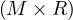
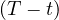
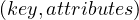

Professor: Alberto Abelló
Student e-mail: jose.antonio.lorencio@estudiantat..upc.edu
This is a summary of the course Big Data Management taught at the Universitat Politècnica de Catalunya by Professor Alberto Abelló in the academic year 22/23. Most of the content of this document is adapted from the course notes by Abelló and Nadal, [1], so I won’t be citing it all the time. Other references will be provided when used.
List of Algorithms
Data driven decision making is the strategy of using data to make decisions, in order to improve the chances of obtaining a positive outcome. It has been gaining importance in the past years, mainly because the data generation rate is increasing rapidly, allowing greater analyses for those who are able to leverage all this data.
The ability to collect, store, combine and analyze relevant data enables companies to gain a competitive advantage over their competitors which are not able to take on these task.
In a nutshell, it is the confluence of three major socio-economic and technological trends that makes data driven innovation a new phenomenon:
The exponential growth in data generated and collected.
The widespread use of data analytitcs, including start-ups and small and medium entreprises.
The emergence of a paradigm shift in knowledge.
Business Intelligence (BI) is the concept of using dashboard to represent the status and evolution of companies, using data from the different applications used by the production systems of the company, which needs to be processed with ETL (Extract, Transform, Load) pipelines into a Data Warehouse. This data is then modelled into data cubes, that are queried with OLAP (OnLine Analytic Processing) purposes. The analytical tools that this setup allows are three:
Static generation of reports.
Dynamic (dis)aggregation and navigation by means of OLAP operations.
Inference of hidden patterns or trends with data mining tools.
The two main sources of Big Data are:
The Internet, which shifted from a passive role, where static hand-crafted contents were provided by some gurus, to a dynamic role, where contents can be easily generated by anybody in the world, specially through social networks.
The improvement of automation and digitalization on the side of industries, which allows to monitor many relevant aspects of the company’s scope, giving rise to the concept of Internet of Things (IoT), and generating a continuous flow of information.
Big Data is a natural evolution of Business Intelligence, and inherits its ultimate goal of transforming raw data into valuable knowledge, and it can be characterized in terms of the five V’s:
Volume: there are large amount of digital information produced and stored in new systems.
Velocity: the pace at which data is generated, ingested and processed is very fast, giving rise to the concept of data stream (and two related challenges: data stream ingestion and data stream processing).
Variety: there are multiple, heterogeneous data formats and schemas, which need to be dealt with. Special attention is needed for semi-structured and unstructured external data. The data variety challenge is considered as the most crucial challenge in data driven organizations.
Variability: the incoming data can have an evolving nature, which the system needs to be able to cope with.
Veracity: the veracity of the data is related to its quality, and it makes it compulsory to develop Data Governance practices, to effectively manage data assets.
In traditional business intelligence, data from different sources inside the company is ETL-processed into the data warehouse, which can then be analyzed using the three types of analyses we’ve seen (Reports, OLAP, DM), in order to extract useful information that ultimately affects the strategy of the company. This is summarized in Figure 1. As highlighted in the figure, the data warehousing process encompasses the ETL processes and the Data Warehouse design and maintenance.
In the context of big data, the focus is shifted, from analyzing data from just inside sources, to data from all types of heterogeneous sources. In this setup, instead of doing an ETL process, the data is collected, through the process of ingestion, and stored into a Data Lake (from which analysts would extract data and perform all necessary transformations a posteriori) or a Polystore (which is a DBMS built on top of different other technologies, to be able to cope with heterogeneous data). Whatever the storing decision, Big Data Analytics are then done on this data, differenciating:
Small analytics: querying and reporting the data and OLAP processing.
Big Analytics: performing data mining on the data.
This process is depicted in Figure 2. In this diagram, we see that the Big Data Management consists of the task of ingestion, together with the design and maintenance of the Data Lake / Polystore.
Thus, the differences are:
Data Warehousing does the ETL process over the data produced by the company, while Big Data Management does the process of ingestion, by which data from internal and external sources is collected.
Data Warehousing uses a Data Warehouse to store the ETLed data and the analyses need to be designed with the structure of this stored data. In contrast, in Big Data Management, the storing facility can cope with the data as is, so the analyses have a wider scope, but they need to correctly treat the data for each analysis conducted.
Thus, as can be inferred from the previous paragraphs, Big Data Management provides a more flexible setup than Data Warehousing, at the expense of needing to perform ad-hoc transformation for each analysis, which can lead to repetition and a decrease in performance. Nonetheless, this decrease is not really a drawback, because some big data analytics tasks cannot be undertaken without this added flexibility.
Descriptive analysis: uses basic statistics to describe the data. In a DW environment, OLAP tools are used for this purpose, in an interactively manner, modifying the analysis point of vire to facilitate the understanding and gain knowledge about the stored data. Basically, understand past data (what happened, when happened, why it happened).
Predictive analysis: uses a set of statistical techniques to analyze historical facts, with the aim of making predictions about future events. Basically, compare incoming data to our knowledge of past data, in order to make predictions about the future (what will happen).
Prescriptive analysis: takes as input the predictions of previous analyses to suggest actions, decisions and describe the possible implications of each of them. Basically, use predictions obtained via predictive analysis to take action and make decisions, as well as to estimate the impact of these decisions in the future (how we should respond to this situation).
The novelty of cloud computing is the same as when electricity shifted from being generated by each company to be centrally generated, benefiting from scale economies and improving the efficiency of the electricity generation. In the case of Cloud Computing, the shift is from companies having their own hardware and software, to an environment in which these resources are offered by a third company, which leverages again the economies of scale and the possibility to allocate resources when needed, increasing the overall efficiency of the tech industries and reducing the costs of each company, as they now don’t need to buy expensive pieces of hardware and software, maintain them, etc.
It eliminates upfront investment, as it is not needed to buy hardware anymore.
You pay for what you use, so costs are reduced because efficient allocation is a complex task to overcome.
The main benefit comes from the aforementioned economy of scale, that allows to reduce costs and improve efficiency. A machine hosted in-house is most of the time underused, because companies don’t usually require it being 100% operational all the time. However, when the machine is available for thousand or millions of customers, it will almost always be required to be working.
Customers can adapt their costs to their needs at any time.
There is no need to manage, maintain and upgrade hardware anymore.
Cloud computing and big data are closely related, and in many ways, cloud computing has enabled the growth and adoption of big data technologies.
One of the main advantages of cloud computing is its ability to provide flexible and scalable computing resources on demand. This is especially important for big data, which requires significant computing power to process and analyze large volumes of data. Cloud computing allows organizations to easily spin up large-scale computing clusters and storage systems to handle big data workloads, without the need to invest in expensive on-premises infrastructure.
In addition to providing scalable computing resources, cloud computing also offers a wide range of data storage and processing services that can be used for big data workloads. Cloud providers offer a variety of data storage services, such as object storage, file storage, and database services, that can be used to store and manage large volumes of data. Cloud providers also offer big data processing services, such as Apache Hadoop, Apache Spark, and machine learning tools, which can be used to analyze and extract insights from big data.
Cloud computing also provides the ability to easily integrate and share data between different systems and applications, both within an organization and with external partners. This is important for big data, which often requires data from multiple sources to be combined and analyzed to gain insights.
Overall, cloud computing has played a key role in enabling the growth and adoption of big data technologies, by providing flexible and scalable computing resources, a wide range of data storage and processing services, and the ability to easily integrate and share data between different systems and applications.
The main four service levels are:
Infrastructure as a Service (IaaS): provides virtualized computing resources, such as virtual machines, storage, and networking, which can be provisioned and managed through an API or web console.
Platform as a Service (PaaS): provides a platform for building and deploying applications, including development tools, runtime environments, and middleware, which can be accessed through an API or web console.
Software as a Service (SaaS): provides access to software applications over the internet, which are hosted and managed by a third-party provider, and can be accessed through a web browser or API.
Business as a Service (BaaS): This is a type of cloud computing service that provides businesses with access to a range of software tools and services, such as customer relationship management (CRM) systems, enterprise resource planning (ERP) software, and human resources management tools. BaaS allows businesses to outsource the management and maintenance of these systems to a third-party provider, freeing up resources and allowing the business to focus on their core operations. BaaS can be a cost-effective way for businesses to access enterprise-level software tools without the need to invest in on-premises infrastructure and maintenance. This is, a whole business process is outsourced, for example using PayPal as a paying platform frees the company from this process.
But there are more services offered by Cloud Computing:
Database as a Service (DBaaS): specific platform services providing data management functionalities.
Container as a Service (CaaS): allows applications to be packaged into containers, which can be run consistently across different environments, such as development, testing, and production.
Function as a Service (FaaS): creates small stand-alone pieces of software that can be easily combined to create business flows in interaction with other pieces from potentially other service providers.
Serverless computing: allows developers to build and run applications without managing servers, by providing an event-driven computing model, in which code is executed in response to specific triggers.
Data analytics and storage: provides tools for storing and analyzing large volumes of data, such as data warehouses, data lakes, and analytics tools, which can be accessed through APIs or web consoles.
Machine learning and artificial intelligence: Provides tools and services for building, training, and deploying machine learning models, such as pre-trained models, APIs for image recognition and natural language processing, and tools for custom model development.
Impedance mismatch often arises when data is passed between different layers of an application, such as between the front-end user interface and the back-end database, or between different applications that need to exchange data. The data structures used in each layer or system may be different, which can cause issues with data mapping, performance, and scalability.
For example, if a front-end application requires data that is stored in a relational database, the application may need to perform complex queries to retrieve and transform the data into a format that can be used by the user interface. This can lead to performance issues and increased complexity in the application code. Similarly, if different applications or services use different data formats or structures, it can be difficult to exchange data between them, which can lead to integration issues and increased development time.
To address impedance mismatch, software developers often use techniques such as object-relational mapping (ORM) to map data between different layers of an application, or use standard data formats such as JSON or XML to enable data exchange between different systems. These techniques can help to simplify data mapping, improve performance, and increase the scalability of the system.
Relational data (OLTP): Relational databases are commonly used for online transaction processing (OLTP) applications, such as e-commerce websites, banking applications, and inventory management systems. Examples of applications that use relational databases include Oracle, MySQL, PostgreSQL, and Microsoft SQL Server.
Multidimensional data (OLAP): Multidimensional databases are commonly used for online analytical processing (OLAP) applications, such as data warehousing, business intelligence, and data mining. Examples of applications that use multidimensional databases include Microsoft Analysis Services, IBM Cognos, and Oracle Essbase.
Key-value data: Key-value databases are commonly used for high-performance, highly scalable applications, such as caching, session storage, and user profiles. Examples of applications that use key-value databases include Redis, Amazon DynamoDB, and Apache Cassandra.
Column-family data: Column-family databases are commonly used for applications that require fast reads and writes on a large-scale, such as content management systems, social networks, and recommendation engines. Examples of applications that use column-family databases include Apache HBase, Apache Cassandra, and ScyllaDB.
Graph data: Graph databases are commonly used for applications that involve complex relationships between data, such as social networks, fraud detection, and recommendation engines. Examples of applications that use graph databases include Neo4j, OrientDB, and Amazon Neptune.
Document data: Document databases are commonly used for applications that require flexible, dynamic data structures, such as content management systems, e-commerce platforms, and mobile applications. Examples of applications that use document databases include MongoDB, Couchbase, and Amazon DocumentDB.
Note that many applications use multiple types of data models, depending on the nature of the data and the requirements of the application. For example, a social network might use a graph database to store social connections, a column-family database to store user data, and a key-value database to cache frequently accessed data.
Key-Value: stores data as a collection of key-value pairs. Each key is associated with a value, and values can be retrieved and updated by their corresponding keys. Key-value databases are simple and highly scalable, making them well-suited for applications that require high performance and low latency.
Wide-column (Column-family): stores data as a collection of columns grouped into column families. Each column family is a group of related columns, and each column consists of a name, a value, and a timestamp. Column-family databases are optimized for storing large amounts of data with fast writes and queries, making them well-suited for applications that require high write and query throughput. Such grouping of columns directly translates into a vertical partition of the table, and entails the consequent loss of schema flexibility.
Graph: stores data as nodes and edges, representing complex relationships between data. Nodes represent entities, such as people, places, or things, and edges represent relationships between entities. Graph databases are optimized for querying and analyzing relationships between data, making them well-suited for applications that require complex querying.
Document: stores data as documents, which can be thought of as semi-structured data with a flexible schema. Each document consists of key-value pairs, and documents can be grouped into collections. Document stores are optimized for storing and querying unstructured and semi-structured data, making them well-suited for applications that require flexibility in data modeling.
Schema variability refers to the dynamic and flexible nature of data models in NoSQL databases. Unlike relational databases, NoSQL databases allow for the schema to be flexible and adaptable, which means that the data structure can evolve over time without requiring changes to the database schema. This allows for greater agility in data modeling, as it makes it easier to add or remove fields or change the data structure as needed.
Its three main consequences are:
Gain in flexibility: allowing schema variability makes the system more flexible to cope with changes in the data.
Reduced data semantics and consistency: With a flexible schema, it is possible to store data that does not conform to a predefined structure. This can lead to inconsistencies in data quality and make it more difficult to enforce data constraints, such as data types or referential integrity.
Data independence principle is lost: allowing schema variability can be seen as a departure from the traditional concept of data independence, which is a key principle of the relational data model. Data independence refers to the ability to change the physical storage or logical structure of the data without affecting the application programs that use the data. In a relational database, the data is organized into tables with fixed schema, which allows for greater data independence.
However, in NoSQL databases, schema variability is often seen as a necessary trade-off for achieving greater flexibility and scalability. By allowing for a more flexible data model, NoSQL databases can better accommodate changes to the data structure over time, without requiring changes to the database schema or application code. This can help improve agility and reduce development time.
That being said, NoSQL databases still adhere to the fundamental principles of data independence in many ways. For example, they still provide a layer of abstraction between the application and the physical storage of the data, which helps to insulate the application from changes to the underlying data storage. Additionally, many NoSQL databases provide APIs that allow for flexible querying and manipulation of data, which helps to maintain a level of data independence.
Some more consequences:
Increased data complexity: As the data model becomes more flexible, the data can become more complex and difficult to manage. This can lead to increased development and maintenance costs, as well as potential performance issues.
Increased development and maintenance costs: As the schema becomes more flexible, the complexity of the data model can increase, which can result in higher development and maintenance costs.
Reduced performance: With a more complex data model, queries can become more complex, which can result in slower query performance. Additionally, since the schema is not fixed, indexing and optimization become more difficult, which can further impact performance.
Physical independence is a key principle of the relational data model, which refers to the ability to change the physical storage of the data without affecting the logical structure of the data or the application programs that use the data. This means that the application should be able to access and manipulate the data without being aware of the underlying physical storage details, such as the storage medium or the location of the data.
The consequences of physical independence include:
Reduced maintenance costs: With physical independence, it is easier to change the physical storage of the data without affecting the application. This can help reduce maintenance costs, as it allows for more flexibility in how the data is stored and accessed over time.
Improved scalability: Physical independence can help improve scalability, as it allows for the data to be distributed across multiple physical storage locations or devices, which can help to improve performance and reduce the impact of failures.
Greater portability: With physical independence, the application is not tied to a specific physical storage medium or location, which can help improve portability across different hardware or software platforms.
Improved performance: Physical independence can help improve performance, as it allows for the data to be stored and accessed in the most efficient way possible, without being limited by the constraints of a specific physical storage medium or location.
Nonetheless, physical independence enhance the problem of the impedance mismatch, because if data is needed in a different form from how it is stored, it has to be transformed, introducing a computing overhead. If we store the data as needed for the application, this problem is reduced, but the physical independence can be lost.
The schema can be explicit/implicit:
Implicit schema: schema that is not explicitly defined or documented. Instead, the schema is inferred or derived from the data itself, usually through analysis or observation. This can be useful in situations where the data is very dynamic or unstructured, and where the structure of the data is not known in advance.
Explicit schema: schema that is explicitly defined and documented, usually using a schema language or a data modeling tool. The schema specifies the types of data that can be stored, the relationships between different types of data, and any constraints or rules that govern the data.
And it can be fixed/variable:
Fixed schema: schema that is static and unchanging, meaning that the structure and organization of the data is predefined and cannot be modified. This is common in relational databases, where the schema is usually defined in advance and remains fixed over time.
Variable schema: schema that is dynamic and flexible, meaning that the structure and organization of the data can change over time. This is common in NoSQL databases, where the schema may be more fluid and adaptable to changing data requirements.
Note that this is not a strict classification, but rather two dimension ranges in which a certain schema can lie.
The RUM conjecture suggests that in any database system, the overall performance can be characterized by a trade-off between the amount of memory used, the number of reads performed, and the number of updates performed. Specifically, the conjecture states that there is a fundamental asymmetry between reads and updates, and that the performance of the system is strongly influenced by the balance between these two operations. In general, the more reads a system performs, the more memory it requires, while the more updates it performs, the more it impacts the system’s overall performance.
The RAM conjecture has three main elements:
Reads: refer to the process of retrieving data from a database. In general, read-heavy workloads require more memory to achieve good performance.
Updates: refer to the process of modifying data in a database. In general, update-heavy workloads require more processing power and can negatively impact overall performance.
Memory: refers to the amount of memory available to a system. In general, increasing memory can improve read-heavy workloads, but may not be as effective for update-heavy workloads.
The RUM conjecture is often used to guide the design and optimization of database systems, as it provides a useful framework for understanding the trade-offs between different system parameters and performance metrics. By understanding the RUM trade-offs, database designers can make informed decisions about how to allocate resources, optimize queries, and balance the workload of the system.
A polyglot system is a system that uses multiple technologies, languages, and tools to solve a problem. In the context of data management, a polyglot system is one that uses multiple data storage technologies to store and manage data. For example, a polyglot system might use a combination of relational databases, NoSQL databases, and search engines to store different types of data.
Polyglot persistence is the practice of using multiple storage technologies to store different types of data within a single application. The idea is to choose the right tool for the job, and to use each technology to its fullest potential. For example, a polyglot system might use a NoSQL database to store unstructured data, a relational database to store structured data, and a search engine to provide full-text search capabilities.
There are several reasons why polyglot persistence is important:
Flexibility: Polyglot systems are more flexible than monolithic systems that use a single technology to store all data. With a polyglot system, you can choose the right tool for the job, and you can adapt to changing requirements and data formats.
Performance: Different data storage technologies are optimized for different types of data and workloads. By using the right tool for the job, you can improve performance and scalability.
Resilience: Using multiple data storage technologies can improve the resilience of your system. If one database fails, the other databases can continue to operate, ensuring that your application remains available and responsive.
Future-proofing: By using multiple data storage technologies, you can future-proof your system against changing data formats and requirements. As new data types and storage technologies emerge, you can add them to your system without having to completely overhaul your architecture.
In summary, polyglot persistence is a powerful approach to data management that allows you to use multiple storage technologies to store and manage different types of data within a single application. By adopting a polyglot approach, you can improve flexibility, performance, resilience, and future-proofing.
There are several factors that can be used to assess the flexibility and explicitness of a schema:
Number of tables/collections: A schema with a large number of tables or collections is typically more explicit and less flexible than a schema with fewer tables or collections. This is because a large number of tables or collections often implies a more rigid structure, whereas a smaller number of tables or collections can allow for more flexibility.
Number of columns/fields: A schema with a large number of columns or fields is typically more explicit and less flexible than a schema with fewer columns or fields. This is because a large number of columns or fields often implies a more rigid structure, whereas a smaller number of columns or fields can allow for more flexibility.
Data types: A schema that uses a large number of data types is typically more explicit and less flexible than a schema that uses fewer data types. This is because a large number of data types often implies a more rigid structure, whereas a smaller number of data types can allow for more flexibility.
Use of constraints: A schema that uses a large number of constraints (such as foreign keys or unique constraints) is typically more explicit and less flexible than a schema that uses fewer constraints. This is because constraints often imply a more rigid structure, whereas a schema with fewer constraints can allow for more flexibility.
Use of inheritance: A schema that uses inheritance (such as table or collection inheritance) is typically more flexible and less explicit than a schema that does not use inheritance. This is because inheritance allows for more flexibility in the structure of the data, whereas a schema that does not use inheritance is typically more explicit in its structure.
Overall, a more explicit schema is one that has a more rigid structure, with more tables, fields, data types, and constraints, whereas a more flexible schema is one that has fewer tables, fields, data types, and constraints, and may use inheritance to provide more flexibility.
Some examples can be:
Fixed/Explicit: An example of a fixed/explicit schema in XML format might look like this:
In this example, the schema is fixed because there are specific tables (customers, orders, and products) and specific fields for each table (such as name and email for customers, and order_date and total_price for orders). There is no room for variation in the structure of the schema.
Fixed/Implicit: An example of a fixed/implicit schema in XML format might look like this:
In this example, the schema is fixed because there is a specific table (posts) and specific fields for that table (such as title and content). However, there is no fixed field for metadata such as tags or categories.
Flexible/Explicit: An example of a flexible/explicit schema in XML format might look like this:
In this example, the schema is flexible because there can be any number of experiments and observations, and there are no fixed fields for metadata. However, each table (experiments and observations) and each field (such as date and sample_size) is explicitly defined in the schema.
Flexible/Implicit: An example of a flexible/implicit schema in XML format might look like this:
In this example, the schema is flexible because there can be any number of posts and comments, and there are no fixed fields for any table. The structure of the schema is also implicit because there is no fixed structure for the data.
A distributed system is a system whose components, located at networked computers, communicate and coordinate their actions only by passing messages.
The challenges of a distributed system are:
Scalability: the system must be able to continuously evolve to support a grouwing amount of tasks. This can be achieve by:
Scale up: upgrading or improving the components.
Scale out: adding new components.
Scale out mitigates bottlenecks, but extra communication is needed between a growing number of components. This can be partially solved using direct communication between peers. Load-balancing is also crucial and, ideally, should happen automatically.
Performance/efficiency: the system must guarantee an optimal performance and efficient processing. This is usually measured in terms of latency, response time and throughput. Parallelizing reduces response time, but uses more resources to do it, negatively affecting throughput unless resources are increased to compensate.
This effect can be mitigated optimizing network usage or using distributed indexes.
Reliability and availability: the system must perform tasks consistently and without failure: it must be reliable. It also must keep performing tasks even if some of its components fail: it must be available. The availability is not always possible, and some functionalities might be affected, but at least a partial service could be provided when a component fails.
To increase failure tolerance, heartbeat mechanisms can be used to monitor the status of the components, together with automatic recovery mechanisms.
It is also important to keep the consistency of data shared by different components, since this requires synchronization. This can be mitigated by asynchronous synchronization mechanisms and flexible routing of network messages.
Concurrency: the system should provide the required control mechanisms to avoid interferences and deadlocks in the presence of concurrent requests. Consensus protocols can help solving conflicts and enabling the system to keep working without further consequences.
Transparency: users of the system should not be aware of all the aforementioned complexities. Ideally, they should be able to work as if the system was not distributed.
A Distributed Database (DDB) is an integrated collection of databases that is physically distributed across sites in a computer network and a Distributed Database Management System (DDBMS) is the software system that manages a distributed database such that the distribution aspects are transparent to the users.
There are some terms worth detailing:
Integrated: files in the database should be somehow structured, and an access interface common to all of them should be provided so that the physical location of data does not matter.
Physically distributed across sites in a computer network: data may be distributed over large geographical areas but it could also be the case where distributed data is, indeed, in the very same room. The required characteristic is that the communication between nodes is done through a computer network instead of simply sharing memory or disk.
Distribution aspects are transparent to the users: transparency refers to separation of the higher-level view of the system from lower-level implementation issues. Thus, the system must provide mechanisms to hide the implementation details.
In a DDBMS distribution transparency must be ensured, i.e., the system must guarantee data, network, fragmentation and replication transparency:
Data independence: data definition occurs at two different levels:
Logical data independence: refers to indifference of user applications to changes in the logical structure of the database.
Physical data independence: hides the storage details to the user.
Network transparency: the user should be protected from the operation details of the network, even hiding its existence whenever possible. There are two subclasses:
Location transparency: any task performed should be independent of both the location and system where the operation must be performed.
Naming transparency: each object must have a unique name in the database, irrespectively of its storage site.
Replication transparency: refers to whether synchronizing replicas is left to the user or automatically performed by the system. Ideally, all these issues should be transparent to users, and they should act as if a single copy of data were available.
Fragmentation transparency: when data is fragmented, queries need to be translated from the global query into fragmented queries, handling each fragment. This translation should be performed by the DDBMS, transparently to the user.
Note that all these transparency levels are incremental.
Note also that full transparency makes the management of distributed data very difficult, so it is widely accepted that data independence and network transparency are a must, but replication and/or fragmentation transparency might be relaxed to boost performance.
The Extended ANSI/SPARC architecturewas designed to provide a comprehensive framework for organizing and managing complex database systems. The extended architecture includes the same three levels as the original ANSI/SPARC architecture, but it adds a fourth level, called the user level.
The four levels of the extended ANSI/SPARC architecture are:
User Level: The user level is the highest level and includes the end users or applications that access the database system. The user level provides a simplified view of the data that is available in the system, and it defines the interactions between the user and the system.
External Level: The external level is the next level down and includes the external schemas that define the view of the data that is presented to the end users or applications. Each external schema is specific to a particular user or group of users and provides a simplified view of the data that is relevant to their needs.
Conceptual Level: The conceptual level is the third level and includes the global conceptual schema that describes the overall logical structure of the database system. The global conceptual schema provides a unified view of the data in the system and defines the relationships between different data elements.
Internal Level: The internal level is the lowest level and includes the physical schema that defines the storage structures and access methods used to store and retrieve the data. The internal schema is specific to the particular database management system and hardware platform that is being used.
This is summarized in Figure 3.
This architecture does not consider distributed, so it need to be consequently adapted to provide distribution trasnparency. To this end, a global conceptual schema is needed to define a single logical database. But the database is composed of several nodes, each of which must now define a local conceptual schema and an internal schema. These adaptations are depicted in Figure 4.
In both architectures, mappings between each layer are stored in the global catalog, but in the distributed architecture there two mappings which are particularly important, namely the fragmentation schema and the allocation schema.
The functional architecture of a centralized DBMS is depicted in Figure 5. The query manager is a component of a database management system (DBMS) that is responsible for handling user queries and managing the overall query processing. It is composed of several sub-components:
The view manager is responsible for managing the views defined in the system. Views are virtual tables that are derived from the base tables in the database and are used to simplify the user’s interaction with the database. The view manager translates user queries that reference views into queries that reference the base tables, allowing the user to interact with the database at a higher level of abstraction.
The security manager is responsible for enforcing security policies and access controls in the system. It ensures that only authorized users are allowed to access the database and that they only have access to the data that they are authorized to see. The security manager also enforces constraints and ensures that the data in the database is consistent and valid.
The constraint checker is responsible for verifying that the data in the database conforms to the integrity constraints defined in the schema. It checks for violations of primary key, foreign key, and other constraints, and ensures that the data in the database is consistent and valid.
The query optimizer is responsible for optimizing user queries to improve performance. It analyzes the query and determines the most efficient way to execute it, taking into account factors such as the available indexes, the size of the tables involved, and the cost of different query execution plans. The query optimizer generates an optimal query execution plan that minimizes the time required to process the query.
Once these steps are done, the execution manager launches the different operators in the access plan in order, building up the results appropriately.
The scheduler deals with the problem of keeping the databases in a consistent state, even when concurrent accesses occur, preserving isolation (I from ACID).
The recovery manager is responsible for preserving the consistency (C), atomicity (A) and durability (D) properties.
The buffer manager is responsible for bringing data to main memory from disk, and vice-versa, communicating with the operating system.
This architecture is not sufficient to deal with distributed data. The functional architecture of a distributed DBMS (DDBMS) is depicted in Figure 6. As we can see, there are now two stages:
Modules cooperate at the global level, transforming the data flow and mapping it to the lower layers, dealing with a single view of the database and the distribution transparency:
The global query manager contains the view manager, security manager, constraint checker and query ooptimizer, which behave as in the centralized case, except for the optimizer, which now considers data location and consults the global schema to determine which node does what.
The global execution manager inserts communication primitives in the execution plan and coordinates the execution of the pieces of the query in the different components to build up the final results from all the query pieces executed distributedly.
The global scheduler receives the global execution plan and distributes trasks between the available sites, guaranteeing isolation between different users.
Modules cooperate at the local level, with a very similar behavior to that of the centralized DBMS.
Ability to scale horizontally.
Efficient fragmentation techniques.
Use as efficiently as possible distributed memory and indexing mechanisms to parallelize execution. Spped up relies on massive replication and parallelism (which in turn improve reliability and availability).
Cloud Databases relax the strong consistency asked by ACID transactions and define the weaker concept of eventual consistency.
A simplistic call level interface or protocol is provided to manage data, which is easy to learn and use, but puts the optimization burden on the side of the developers. This also compromises some transparency. The schemaless nature of these systems complicates even more the creation of a declarative query language like SQL.
The setting up of hardware and software must be quick and cheap.
The concept of multi-tenancy appears: the same hardware/software is shared by many tenants. This requires mechanisms to manage the sharing and actually benefitting from it.
Rigid pre-defined schemas are not appropriate for these databases. Instead, there is a need towards gaining flexibility.
The difficulty can be summarized as the need to deal with the potential high number of tenants, and the unpredictability of their workloads’ characteristics. Popularity of tenants can change very rapidly, fact that impacts the Cloud services hosting their products. Also, the activities that they perform can change.
Thus, the provider has to implement mechanisms to be able to deal with this variety and variability in the workloads.
Also, the system should tolerate failures and offer self-healing mechanisms, if possible.
Finally, the software should easily allow to scale out to guarantee the required latencies. Adding or upgrading new machines should happen progressively, so that service suspension is not necessary at all.
Data design: provides the means to decide on how to fragment the data, where to place each fragment, and how many times they will be stored (replication).
Catalog management: requires the same considerations as the design of the database regarding fragmentation, locality and replication, but with regard to metadata instead of data. The difference in this case is that some of the decisions are already made on designing the tool and few degrees of freedom are left for administrators and developers.
Transaction management: it is specially hard and expensive in distributed environments. Distributed recovery and concurrency control mechanisms exist, but there is a need to find a trade-off between the security they guarantee and the performance impact they have.
Specially relevant in this case is the management of replicas, which are expensive to update, but reduce query latency and improve availability.
Query processing: it must be as efficient as possible. Parallelism should benefit from data distribution, without incurring in much communication overhead, which can be reduced by replicating data.
Data fragmentation deals with the problem of breaking datasets into smaller pieces, decreasing the working unit in the distributed system. It has been useful to reflect the fact that applications and users might be interested in accessing different subsets of the data. Different subsets are naturally needed at different nodes and it makes sense to allocate fragments where they are more likely to be needed for use. This is data locality.
There are two main fragmentation approaches:
Horizontal fragmentation: a selection predicate is used to create different fragments and, according to an attribute value, place each row in the corresponding fragment.
A distributed system benefits from horizontal fragmentation when it needs to mirror geographically distributed data to facilitate recovery and parallelism, to reduce the depth of indexes and to reduce contention.
Fragmentation can go from one extreme (no fragmentation) to the other (placing each row in a different fragment). We need to know which predicates are of interest in our database. As a general rule: the 20% most active users produce 80% of the total accesses. We should focus on these users to determine which predicates to consider in our analysis.
Finally, we need to guarantee the correctness:
Completeness: the fragmentation predicates must guarantee every row is assigned to, at least, one fragment.
Disjointness: the fragmentation preficates must be mutually exclusive (minimality property).
Reconstruction: the union of all the fragments must constitute the original dataset.
We have only considered single relations for this analysis, but it is also possible to consider related datasets and fragment them together, this is called derived horizontal fragmentation. Let R,S be two relations such that R possess a foreign key to S and are related by means of a relationship r. In this case, S is the owner and R is the member. Suppose also that S is fragmented in n fragments Si,i = 1,...,n, and we want to fragment R regarding S using the relationship r. The derived horizontal fragmentation is defined as
where ⋉ is the left-semijoin1 and the joining attributes are those in r.
If R and S are related by more than one relationship, we should apply the following criteria to decide which one to use:
The fragmentation more used by users/applications.
The fragmentation that maximizes the parallel execution of the queries.
In order to consider a derived horizontal fragmentaiton to be complete and disjoint, two additional constraints must hold on top of those stated before:
Completeness: the relationship used to semijoin both datasets must enforce the referential integrity constraint.
Disjointness: the join attribute must be the owner’s key.
Vertical fragmentation: partitions the datasets in smaller subsets by projecting some attributes in each fragment.
Vertical fragmentation has been traditionally overlooked in practice, because it worsened insertions and update timems of transactional systems in many times. However, with the arrival of read-only workloads, this kind of fragmentation arose as a powerful alternative to decrease the number of attributes to be read from a dataset.
In general, it improves the ratio of useful data read and it also reduces contention and facilitates recovery and parallelism.
As disadvantages, note that it increases the number of indexes, worsens update and insertion time and increases the space used by data, because the primery key is replicated at each fragment.
Deciding how to group attributes is not obvious at all. The information required is:
Data characteristics: set of attributes and value distribution for all attributes.
Workload: frequency of each query, access plan and estimated cost of each query and selectivity of each predicate.
A good heuristic is the following:
Determine primary partitions (subsets of attributes always accessed together).
Generate a disjoint and covering combination of primary partitions, which would potentially be stored together.
Evaluate the cost of all combinations generated in the previous phase.
Once the data is fragmented, we must decide where to place each segment, trying to optimize some criteria:
Minimal cost: function resulting of computing the cost of storing each fragment Fi at a certain node Ni, the cost of querying Fi at Ni and the cost of updating each fragment Fi at all places where it is replicated, and the cost od communication.
Maximal performance: the aim is to minimize the response time or maximize the overall throughput.
This problem is NP-hard and the optimal solution depends on many factors.
In a dynamic environment the workload and access patterns may change and all these statistics should always be available in order to find the optimal solution. Thus, the problem is simplified with certain assumptions and simplified cost models are built so that any optimization algorithm can be adopted to approximate the optimal solution.
There are several benefits to data allocation, including:
Improved performance: By distributing the data across multiple nodes, the workload can be distributed among the nodes, reducing the load on any single node and improving overall performance.
Increased availability: With data replicated across multiple nodes, the failure of any single node does not result in a loss of data or loss of access to the data.
Scalability: Distributed data allocation allows for scaling the system by adding more nodes to the system, as needed.
Reduced network traffic: By keeping data local to the nodes where it is most frequently accessed, data allocation can reduce the amount of network traffic needed to access the data.
Better resource utilization: Data allocation can help to balance the use of resources across the nodes in the system, avoiding overloading some nodes while underutilizing others.
Data replication refers to the process of making and maintaining multiple copies of data across multiple nodes in a distributed database system. There are several benefits to data replication, including:
Improved availability: By replicating data across multiple nodes, the system can continue to function even if one or more nodes fail or become unavailable, ensuring the availability of the data.
Increased fault tolerance: Data replication can help to ensure that data remains available even in the event of a hardware or software failure, improving the overall fault tolerance of the system.
Faster data access: With multiple copies of data available across multiple nodes, data can be accessed more quickly by users and applications, improving overall system performance.
Improved load balancing: Replicating data across multiple nodes can help to balance the workload on each node, improving overall system performance and efficiency.
Enhanced data locality: Replication can also help to improve data locality by ensuring that frequently accessed data is available on the same node, reducing the need to access data over the network.
The same design problems and criteria can be applied to the catalog, but now we are storing metadata. This requires two important considerations:
Metadata is much smalles than data, which makes it easier to manage.
Optimizing performance is much more critical, since accessing this metadata is a requirement for any operation in the system.
Many decisions are already made by the architects of the system, and only few options can be parameterized on instantiaitng it.
Global metadata: are allocated in the coordinator node.
Local metadata: are distributed in the different nodes.
A typical choice we can make in many NOSQL systems is having a secondary copy of the coordinator (mirroring) that takes control in case of failure. Of course, this redundancy consume some resources.
The CAP theorem, also known as Brewer’s theorem2 , is a principle that states that in a distributed system, it is impossible to simultaneously provide all three of the following guarantees:
Consistency: Every read operation will return the most recent write or an error. All nodes see the same data at the same time.
Availability: Every non-failing node returns a response for every request in a reasonable amount of time, without guaranteeing that it contains the most recent write.
Partition tolerance: The system continues to operate despite arbitrary message loss or network failure between nodes.
According to the CAP theorem, a distributed system can only provide two out of these three guarantees at a time. In other words, a distributed system can either prioritize consistency and partition tolerance, consistency and availability, or availability and partition tolerance, but it cannot achieve all three simultaneously.
This theorem has important implications for the design and operation of distributed systems, as designers must carefully consider which trade-offs to make when choosing between consistency, availability, and partition tolerance. In larger distributed-scale systems, network partitions are given for granted. Thus, we must choose between consistency and availability: Either we have an always-consistent system that becomes temporally unavailable, or an always-available system that temporally shows some inconsistencies.
Strong consistency: replicas are synchonously modified and guarantee consistent query answering and the whole system will be declared not to be available in case of network partition.
Eventual consistency: changes are asynchronously propagated to replicas, so answer to the same query depends on the replica being used. In case of network partition, changes will be simply delayed.
Non-distributed data: connectivity cannot be lost and we can have strong consistency without affecting availability.
There are two choices that generate four alternative configurations for replica synchronization management:
Primary/secondary versioning:
Primary versioning refers to a scheme where one copy of the data is designated as the primary copy, and all updates are made to this copy first. Once the primary copy is updated, the changes are propagated to secondary copies. This approach ensures that all nodes eventually receive the same data, but it may introduce a delay in propagation.
In contrast, secondary versioning involves making updates to multiple copies simultaneously, with all nodes being able to receive updates independently. This approach can reduce the propagation delay, but it may increase the complexity of the replication process.
Eager/lazy replication:
Eager replication refers to a scheme where updates are propagated to all replicas immediately upon completion, ensuring that all nodes have the most recent version of the data at all times. This approach can be resource-intensive, as it requires significant network bandwidth and processing power.
On the other hand, lazy replication involves delaying the propagation of updates until necessary, such as when a read request is received for a particular node. This approach can reduce the network and processing costs associated with replication but may lead to inconsistencies between replicas in the short term.
These two choices give rise to four possible alternatives, depicted in Figure 7.
A user can only modify the primary copy, and his changes are immediately propagated to any other existing copy (which can always be read by any user). Only after being properly propagated and changes acknowledged by all servers, the user receives confirmation.
A user can only modify the primary copy, and receives confirmation of this change immediately. His changes are eventually propagated to any other existing copy (which can always be read by any user).
A user can modify any replica, and her changes are immediately propagated to any other existing copy (which can always be read by any user). Only after being properly propagated and changes acknowledged by all servers, the user receives confirmation.
A user can modify any replica, and receives confirmation of this change immediately. His changes are eventually propagated to any other existing copy (which can always be read by any user).
a) and c) correspond to the traditional concept of consistency, while b) and d) correspond to the concept of eventual consistency.
Eventual consistency is a concept in distributed databases that refers to a property of the system where all updates to a data item will eventually propagate to all nodes in the system and converge to a consistent state, given a sufficiently long period of time without updates.
In a distributed system, data is replicated across multiple nodes, and each node maintains a copy of the data. Due to network latency, nodes may have different versions of the data at any given time, leading to inconsistencies between replicas. Eventual consistency allows for these inconsistencies to exist temporarily until all nodes have received the updated data.
Eventual consistency does not guarantee immediate consistency between replicas, but it does ensure that all replicas will eventually converge to a consistent state. This property is particularly useful for distributed systems that prioritize availability and partition tolerance over consistency 3 , such as in large-scale web applications or data-intensive systems.
Let:
N: number of replicas
W: number of uncommited written replicas
R: number of replicas with the same information to be read before giving a response
The inconsistency window is the time during which W < N.
If W +R > N, then it is assured that some read replica would have been modified, and strong consistency is achieved because the user will always receive the updated value.
If W + R ≤ N, then we cannot ensure this, and the consistency is eventual.
Some usual configurations are:
Fault tolerant system: N = 3,R = 2,W = 2.
Massive replication for read scaling: N is big and R = 1.
Read One-Write All (ROWA): R = 1,W = N.
The global query optimizer performs:
Semantic optimization
Syntactic optimization:
Generation of syntactic trees
Data localization
Reduction
Global physical optimization
Then, the local query optimizer performs local physical optimization.
Data shipping and query shipping are both techniques used in distributed databases to improve performance and reduce network traffic. However, they differ in the way they handle data movement.
Data shipping involves moving the data itself from one node to another node in the network to execute the query. In other words, the data is shipped to the node where the query is executed. This approach works well when the amount of data being moved is small, and the network has low latency and high bandwidth.
On the other hand, query shipping involves shipping the query to the nodes where the data resides and executing the query on those nodes. In this approach, the network traffic is reduced because only the query is sent over the network, and the data remains in its original location. This approach works well when the data is large, and the network has high latency and low bandwidth.
It is possible to design hybrid strategies, in which it is dynamically decided what kind of shipping to perform.
Reconstruction refers to how the datasets are obtained from their fragments. For example, a dataset which is horizontally fragmented is reconstructed by means of unions.
On the other hand, reduction refers to the process of removing redundant or unnecessary operations from a query without changing its semantics. This is achieved by applying various optimization techniques, such as elimination of common sub-expressions, dead-code elimination, and constant folding, which can simplify the query execution plan and reduce the number of operations required to produce the result.
The exchange operator is used to redistribute data between nodes when it is needed to complete a query. For example, when a query involves joining two tables that are partitioned across multiple nodes, the exchange operator is used to redistribute the data so that the join can be performed locally on each node, instead of sending all the data to a single node for processing.
The exchange operator can be used for both horizontal and vertical partitioning. In horizontal partitioning, the exchange operator is used to redistribute the rows of a table between nodes. In vertical partitioning, the exchange operator is used to redistribute the columns of a table between nodes.
The cost is the sum of the local cost and the communication cost:
The local cost is cost of the processing at each node, divided in:
Cost of central unit processing, #cycles.
Unit cost of I/O operations, #IOs.
The commnication cost is the cost due to the exchange of information between nodes for synchronization, divided in:
Cost of initiating a message and sending a message, #messages.
Cost of transmitting a byte, #bytes.
Query time (or execution time) is the time that it takes for the system to process a query, since it starts it execution until the results start being returned to the user (or are completely returned, if desirable).
Response time is a wider term, that refers to the time it takes for the system since the user issues a query until she receives the response.
Inter-query parallelism refers to the execution of multiple queries in parallel. This means that the queries are executed independently of each other and can run simultaneously on different processors or nodes in a distributed system.
Intra-query parallelism, on the other hand, involves breaking down a single query into smaller parts or sub-queries that can be executed in parallel. This can improve query performance by allowing multiple parts of a query to be executed simultaneously.
Within intra-query parallelism, there are two types of parallelism:
Intra-operator parallelism refers to the parallel execution of operations within a single query operator. For example, if a query involves a selection operation, the selection can be parallelized by partitioning the data and having multiple processors or nodes evaluate the selection condition on different partitions in parallel. In the context of the process tree, it corresponds to several parts of the same node executing in parallel.
Inter-operator parallelism refers to the parallel execution of different query operators. For example, if a query involves both a selection and a join operation, the selection and join can be executed in parallel by having different processors or nodes evaluate different parts of the query plan simultaneously. In the context of the process tree, it corresponds to several nodes executing in parallel.
Intra-operator parallelism is based on fragmenting data, so that the same operator can be executed parallely by issuing it to different fragments of the data.
If there is a preexistant (a priori) fragmentation, it can be used for this. But even if the dataset has not been previously fragmented, the DDBMS can fragment it on the fly to benefit from this approach.
The input of an operation can be dynamically fragmented and parallelized, with different strategies:
Round Robin: This method involves distributing the data uniformly across multiple nodes in a circular fashion. Each new record is assigned to the next node in the circle, and when the last node is reached, the next record is assigned to the first node again. This type of fragmentation works well when the workload is evenly distributed across all nodes.
Range: With this method, the data is partitioned based on a specific range of values in a column. For example, a column with dates could be used to partition the data into different time periods. Each node would be responsible for storing data within a certain range of dates. This method is useful when there are specific patterns in the data that can be used to group it. This approach facilitates directed searches, but needs accurate quartile information.
Hash: This method involves taking a hash value of a column and using it to determine which node the data should be stored on. The hash function should distribute data evenly across all nodes, and it should be consistent so that the same value always hashes to the same node. This type of fragmentation works well when the workload is unpredictable, and there is no specific pattern to the data. This approach allows directed searches, but performance depends on the hash function chosen.
If dynamic fragmentation is used, a new property containing information about the fragmentation strategy being used, the fragmentation predicates and the number of fragments produced must be added to the process tree.
A linear query plan, also known as a pipeline, consists of a series of operators that are executed in a linear sequence. In this topology, inter-operator parallelism is limited because the output of one operator must be fully consumed by the next operator before it can begin processing its input. This means that the degree of parallelism is limited by the slowest operator in the pipeline.
On the other hand, a bushy query plan consists of multiple subtrees that can be executed in parallel. In this topology, operators are arranged in a more complex structure that allows for more inter-operator parallelism. For example, two independent subtrees can be executed in parallel, with the results of each subtree combined in a later operation.
In general, a bushy query plan is more amenable to inter-operator parallelism than a linear query plan. However, the degree of parallelism that can be achieved depends on many factors, including the number of available processing resources, the characteristics of the data being processed, and the specifics of the query being executed.
Linear trees can be exploited with parallelism by pipelining, which consists in the creation of a chain of nested iterators, having one of them per operator in the process tree. The system pulls from the root iterator, which transitively propagates the call through all other iterators in the pipeline. This does not allow parallelism per se, but it can if we add a buffer to each iterator, so they can generate next rows without waiting for a parent call. Thus, the producer leaves its result in an intermediate bugger and the consumer takes its content asynchronously. This buffers imply that stalls can happen when an operator becomes ready and no new input is available in its input buffer, propagating the stall to the rest of the chain.
Amdahl’s law states that
where S is the maximum improvement reachable by parallelizing the system, N is the number of subsystems, and p is the fraction of parallelizable work of the system.
This is generalized by the universal scalability law, which states that
where C is the maximum improvement reachable by parallelizing the system, N is the number of subsystems, σ is the system’s contention or the non-parallelizable fraction work of the system, and κ is the system’s consistency delay, which models how much the different parallel units require communication.
Thus, scalability is limited by:
The number of useful subsystem.
The fraction of parallelizable work.
The need for communication between subsystems.
Persistent storage is important because it allows data to be stored and accessed even after a system or application has been shut down or restarted. Without persistent storage, data would be lost each time the system or application is shut down, which is clearly not desirable in most cases.
Efficient file management: optimized for large files.
Efficient append: because the main access pattern is assumed to be Write Once, Read Many (WORM), and updates are usually done by appending new data, rather than overwriting existing ones.
Multi-client.
Optimal sequential scans: useful to quickly read large files.
Resilience failure: failures must be monitored and detected, and when they happen there must be recovery mechanisms in place to revert potential inconsistencies.
The architecture is Coordinator-Worker:
Coordinator node: responsible for tracking the available state of the cluster and managing the worker nodes. In HDFS it is called namenode (in Google File System (GFS) it is called master).
Worker nodes: those doing the actual work. In HDFS they are called datanodes (in GFS they are called chunknodes).
They have the following characteristics:
Files are splitted into chunks: a chunk is the minimal unit of distribution. The chunk size can be customized per file.
Chunks can be replicated: to guarantee robustness, each replica must be stored in a different datanotes, and the amount of replicas to store is also customizable. If the cluster cannot replicate a chunk for the required value, the chunk is said to be underreplicated.
In-memory namespace: thousands of client applications should be served with minimal overhead. Thus, to reduce lookup costs, the data structure containing the file hierarchy and references to their chunks resides in memory in the coordinator node.
Bi-directional communication: the namenode and datanotes have mechanisms to send both data and control messages between them. Datanodes can also send control messages to each other, but in most cases they will be exchanging chunks of data.
Single point of failure: as the coordination is done by a single done, the situation is that of a single point of failure (SPOF): if the namenode fails, then the whole cluster becomes unavailable. To overcome this, it is commong to maintain a failover replica (or mirror).
A depiction of the architecture is in Figure 8.
Horizontal Layout: data is stored in separate files based on some logical grouping or partitioning criteria, such as by date or by user. Each file contains records that are self-contained and do not span multiple files. This layout is best suited for situations where data is constantly being appended or modified, as it allows for efficient data access and manipulation without the need to scan the entire dataset.
Vertical Layout: In the vertical layout, data is stored in different files, dividing it into its columns. This layout is optimized for situations where data is read and processed in a column-wise manner. It allows for efficient compression and encoding of data, and enables quick access to specific fields without the need to scan the entire dataset.
Hybrid Layout: The hybrid layout combines aspects of both the horizontal and vertical layouts. Data is partitioned into separate files based on some logical grouping, and they are also separated into their columns. This layout provides the benefits of both the horizontal and vertical layouts, allowing for efficient data access and manipulation while also enabling column-wise processing.
| Format | Description | Pros | Cons | Use Cases |
| SequenceFile | Simple binary file format consisting of key-value pairs. (Horizontal layout) | - Compact and efficient for large files - Good for streaming | - Not as flexible as other formats - Lacks some compression options | - Log files - Sensor data - Web server logs |
| Avro | Data serialization system with a compact binary format and support for schema evolution (Horizontal layout) | - Supports rich data types and schema evolution - Can be used with many programming languages | - May not be as efficient as some other formats - Requires a schema | - Data exchange between Hadoop and other systems - Machine learning applications |
| Zebra | Table-based format for structured data with support for indexing and filtering (Vertical layout) | - Provides indexing and filtering capabilities - Efficient for join operations - Good for projection-based workloads | - Limited support for compression - May not be as flexible as other formats | - Data warehousing - OLAP |
| ORC | Optimized Row Columnar format for storing Hive tables with support for compression and predicate pushdown (Hybrid layout) | - Efficient for analytical workloads - Supports predicate pushdown for filtering | - Requires schema - Not as widely supported as some other formats | - Data warehousing - Hive tables |
| Parquet | Columnar file format with support for nested data and compression, optimized for query performance (Hybrid layout) | - Supports nested data types and compression - Efficient for analytical queries - Supports predicate pushdown for filtering | - Not as efficient for write-heavy workloads - May require more memory | - Analytics - Data warehousing - Machine learning |
|
Feature | Horizontal | Vertical | Hybrid
| ||
| SequenceFile | Avro | Zebra | ORC | Parquet | |
| Schema | No | Yes | Yes | Yes | Yes |
| Column Pruning | No | No | Yes | Yes | Yes |
| Predicate Pushdown | No | No | No | Yes | Yes |
| Metadata | No | No | No | Yes | Yes |
| Nested Recrods | No | No | Yes | Yes | Yes |
| Compression | Yes | Yes | Yes | Yes | Yes |
| Encoding | No | Yes | No | Yes | Yes |
Column pruning involves eliminating unnecessary columns from the result set of a query before executing the query. This is done by analyzing the query and determining which columns are required to satisfy the query. The optimizer then generates a plan that only includes the necessary columns, reducing the amount of I/O and CPU processing required to execute the query. Column pruning is particularly useful in queries that involve large tables with many columns, as it can significantly reduce the amount of data that needs to be scanned.
Predicate pushdown involves pushing down filtering conditions into the storage layer, rather than applying the filters after reading the data into memory. This is done by analyzing the query and determining which predicates can be evaluated at the storage layer before the data is read into memory. The storage layer then applies the predicates before returning the data to the query engine. This can significantly reduce the amount of data that needs to be read into memory, reducing the I/O and CPU processing required to execute the query. Predicate pushdown is particularly useful in queries that involve large tables with many rows, as it can significantly reduce the amount of data that needs to be read from disk.
As we have seen, each format provides a different set of features, which will affect the overall performance when retrieving the data from disk. There are heuristic rules to decide the most suitable file format depending on the kind of query to be executed:
SequenceFile: if the dataset has exactly two columns.
Parquet: if the first operation of the data flow aggregates data or projects some of the columns.
Avro: if the first operation of the data flow scans all columns, or performs other kinds of operations such as joins, distinct, or sort.
The coordinator is in charge of the detection of failures and tolerance. Periodically, the namenode receives heartbeat messages from the datanodes. If a namenode systematically fails to send heartbeats, then the namenode assumes that the datanote is unavailable and corrective actions must be taken. The namenode:
Looks up the file namespace to find out what replicas were maintained in the lost chunkserver.
This missing replicas are fetched from the other datanodes maintaining them.
They are copied to a new datanode to get the system back to a robust state.
The strategy is based on caching metadata in the client, and works as follows:
The first time a file is requested, the client applications must request the information from the namenode.
The namenode instructs the corresponding datanodes to send the appropriate chunks. They are chosen according to the closeness in the network to the client, optimizing bandwidth.
The datanodes send the chunks composing the file to the client application.
The client is now able to read the file. But it also keeps the locations of all the chunks in a cache.
If the client needs the same file, it does not need to ask the namenode, but can request directly to the datanodes whose information was cached before.
The set of caches in the clients can be seen a strategy for fragmentation and replication of the catalog.
Balancing allows HDFS to have a great performance working with latge datasets, since any read/write operation exploits the parallelism of the cloud. This balancing is donde by randomly distributing the data chunks into different servers.
Having more blocks per node in the cluster increases the probability that the blocks will be better balanced over the nodes, but even using 40 blocks per node, the coefficient of variation is still big (more than 10%). To correct skewed distributions, Hadoop offers the Balancer, which examines the current cluster load distribution and based on a threshold parameter, it redistributes blocks across cluster nodes to achieve better balancing. Exceeding the threshold in either way would mean that the node is rebalanced. In addition to periodically fixing the distribution of an HDFS cluster in use, the Balancer is also useful when changing the cluster’s topology.
The replication factor is a value that indicates how many replicas of each file must be maintained and it can be customized globally or at the level of file. If it is not possible to maintain the replication factor, the system informs the user about the specific chunks that are underreplicated.
Stale replicas can appear either because a worker was down and its blocks were not updated, or due to a failure of a write operation. Detecting this replicas is crucial to maintain consistency. For this, the namenode maintains block version numbers to distinguish up-to-date and stale replicas. When the namenode aims to append new data to a file, it updates the block version numbers associated to the file’s blocks.
HDFS applies a eager/primary-copy strategy for replica synchronization:
Writing can only happen on the primary-copy and the replicas are blocked until they are synchronized:
The client communicates to the namenode that it wants to write data into a file. It communicates the target path and how many chunks it wants to write.
The coordinator annotates how many replicas are to be stored, and where they will be stored. This information is sent back to the client.
The client writes the primary replica into a datanode (the primary datanode or primary chunkserver). Datanodes talk to each other, sending replicas of the chunk until a consistent state is reached.
When all chunks have been written, the client sends a commit message to the primary replica.
The primary replica commits the changes to all other replicas.
The rest of the replicas confirm the commit.
The primary replica acknowledge the changes to the client.
Sequential reads heavily benefit from data locality, which is mostly ignored by random access.
If we use a rotating disk, then the cost basically depdens on three components:
Seek time: time to position the arm.
Rotation time: average time waiting for the disk to spin until the head reaches the right sector.
Data transfer: which depends on the bandwidth.
The different between sequential and random acces is that random access does not find the data together, so its cost is:
while for sequential access, seek and rotation only accounts once:
Moreover, sequential acces.s pattern makes the next read absolutely predictable with pre-fetching, maximizing the effective read ratio by benefitting from the multiples layers of caching. In figure 9, there is a diagram of how memory caching works. The closer to the disk, the more capacity the memory has, but with higher latency. The closer to the CPU, the faster and smaller the memory is. Thus, finding data in the top levels of cache is hard, but crucial to gain performance.
A BigTable is a sparse, distributed, persistent, multi-dimensional, sorted map:
Sparse: few keys have an associated value.
Distributed: enabling cluster parallelism.
Persistent: data is stored in disk (using HDFS as underlying technology).
Multi-dimensional: the values have columns.
Sorted: lexicographically by the primary key.
Map: a map is a data structure that associates a unique key to each value (record).
A map data structure is a collection of key-value pairs that allows fast and flexible access to its elements based on keys. Maps can store different types of keys and values, such as numbers, strings, objects, etc. Maps are useful for storing associations between two objects or values.
A key-value store is a simple model that stores data as pairs of keys and values. A wide-column store is a more complex model that stores data as rows and columns, where each row can have different columns. Some differences between them are:
A key-value store can only query data by key, while a wide-column store can query data by row or column.
A key-value store has no schema, every key has one value, that can be of any form.
A wide-column store has a flexible schema, where every row can have different columns. Each of the columns is schema-less.
A key-value store is suitable for simple lookups, while a wide-column store is suitable for analytical queries.
Some examples of key-value stores are Redis, etcd and Memcached. Some examples of wide-column stores are Cassandra, HBase and ScyllaDB.
Table: a table is a collection of one or more column families.
Column family: a column family is a group of columns that share a common prefix and storage options. A qualifier is an internal field of the columns. It is set at the row-level, so it is not fixed and can vary from column to column and from row to row.
Row: a row is a collection of column values that are identified by a unique row key.
Cell: a cell is the value of a column in a row. Each cell can contain multiple versions of the same data:
Each version is identified by a timestamp, which can be assigned explicitly or automatically.
| Users | ||
| Row key | ColumnFamily1 | ColumnFamily2 |
| Personal | Address | |
| Alice | name: Alice Smith, email: alice@upc.es | street: Avinguda Diagonal, city: Barcelona |
| Bob | name: Bob Jones | street: Gran Vía, city: Murcia |
| Charlie | name: Charlie Brown, email: charlie@ch.ch | |
If we wanted to recreate this example in HBase:
CREATE TABLE <tablename>, <colf1>,...,<colfn>: Creates a table with defined column families.
DESCRIBE <tablename>: Describes the schema of the specified table, including its column families and any compression or encoding settings.
ALTER <tablename>, <params>: Used to modify the schema of an existing table, such as adding or removing column families, changing compression or encoding settings, or modifying table-level properties.
COUNT <tablename>: Counts the number of rows in the specified table.
EXISTS <tablename> [, <params>]: Used to check whether a table or column family exists in HBase or not.
DISABLE <tablename>: Disables the specified table, i.e., the table is taken offline and no further reads or writes are allowed.
ENABLE <tablename>: Enables a disabled table.
DROP <tablename>: Permanently deletes the specified table.
PUT <tablename>, <rowkey> [, <columns>]: Puts a new record with the specified key and columns in the specified table.
GET <tablename>, <rowkey> [, <columns>]: Retrieves the data for the specified row and columns from the specified table.
DELETE <tablename>, <rowkey> [,<columns>]: Deletes the specified row or columns from the specified table.
SCAN <tablename> [, <columns>]: Scans the specified table and retrieves all rows that match the specified criteria.
LIST: Lists all the tables in the HBase cluster.
EXIT: Used to exit the HBase shell. When you execute this command, the shell will close and you will be returned to the command prompt.
STATUS [{summary | simple | detailed}]: Used to display the status of the HBase cluster, including the number of servers and regions, the average load, and the cluster ID.
SHUTDOWN: Used to shut down the HBase cluster. This command will stop all HBase daemons and bring down the HBase cluster. You should use this command with caution, as it will result in the loss of any data that has not been flushed to disk.
Region Servers (HRegionServer): HBase stores data in regions, which are subsets of a table. Each region is served by a region server, which is responsible for serving read and write requests for that region.
HMaster: The HMaster is the coordinator node for the cluster. It manages the metadata for the HBase tables, including region assignment and load balancing.
ZooKeeper: HBase relies on ZooKeeper for coordination and synchronization of distributed processes. ZooKeeper is used to elect the HMaster and to store metadata for HBase.
HDFS: HBase stores its data in Hadoop Distributed File System (HDFS). HDFS provides scalable and fault-tolerant storage for HBase data. HBase uses two types of HDFS files:
HFile: regular data files containing column data.
HLog: region’s log files, that allow flush/fsync for small append-style writes.
HBase Client: The HBase client is used to interact with the HBase cluster. It provides APIs for creating, reading, updating, and deleting data in HBase.
In HBase, data is stored in a tree structure that is composed of regions, stores, and memstores.
Regions: A region is a subset of a table that contains a range of contiguous rows. HBase automatically splits regions as they grow in size and merges regions as they shrink, in order to maintain a balanced distribution of data across the cluster.
Stores (StoreFile): A store is a physical storage unit that is associated with a region and contains a set of column families. Each store is responsible for storing the data for one or more column families. StoreFiles are divided by HDFS in chunks.
MemStores: A MemStore is an in-memory data structure that is associated with a store and contains a sorted map of key-value pairs. When a client writes data to HBase, it is initially written to the memstore. Once the MemStore reaches a certain threshold, it is flushed to disk as a new store file. Usually, the size of a MemStore is 128 MB.
Within each store, data is stored in a column-oriented fashion, with all values for a given column stored together. This allows for efficient access to columns and column families, and also enables compression and other optimization techniques.
Thus, a StoreFile is a file of HFile format, consisting on several HDFS chunks of size 128 MB, which are structured into HBase blocks of size 64 KB.
HBase employs three basic algorithms to manage the storage and retrieval of data: flush, minor compaction, and major compaction.
Flush: When a client writes data to HBase, it is initially written to an in-memory data structure called the memstore. Once the memstore reaches a certain threshold, HBase will flush it to disk as a new store file, a SSTable. This process is known as a flush. Flushing is important to ensure that data is written to disk in a timely manner and to free up memory for new writes. Flushing generates different disk versions of the same record.
Minor compaction: Over time, as data is written and deleted from HBase, SSTables can become fragmented and contain empty or deleted cells. To address this, HBase periodically performs a minor compaction, which merges smaller SSTables together and removes any empty or deleted cells. This helps to optimize data storage and improve query performance. This process runs regularly in the background. Note that this operation does not remove all record versions (only some).
Major compaction: In addition to minor compaction, HBase also performs periodic or, most often, manually triggered major compactions, which merge all SSTables for a given region into a single SSTable and remove any deleted cells. Major compactions are more resource-intensive than minor compactions, but they help to further optimize data storage and improve query performance. After a major compaction occurs, all versions of the records are merged into one (so they can be seen as a consistency checkpoint of the region).
Both minor and major compactions are configurable, and the frequency and timing of these operations can be adjusted based on the workload and resource availability of the HBase cluster.
The LSM-tree (Log-Structured Merge Tree) is a data structure that is used in many modern distributed databases, including HBase, Cassandra, and LevelDB. The LSM-tree is designed to provide efficient and scalable read and write performance for large datasets. The main components and behavior of an LSM-tree are:
Log-structured storage: In an LSM-tree, new data is initially written to a write-ahead log, which is an append-only file that is optimized for sequential writes. The log provides durability for the data, ensuring that it is safely stored on disk in the event of a crash.
MemTable: In addition to the write-ahead log, an LSM-tree also includes an in-memory data structure called the MemTable. As new data is written to the database, it is first written to the MemTable. Once the memtable becomes full or reaches a certain size threshold, it is flushed to disk as a new SSTable. This MemStore holds the most recent updates sorted by key, enabling for fast lookups.
Sorted string table (SSTable): An SSTable is a persistent, sorted data structure that contains a subset of the data in the database. SSTables are created through the flushing of the MemTable and are organized as a series of key-value pairs, sorted by key. These, as mentioned previously, may contain different versions of the same row.
Merge and compaction: Over time, the database accumulates many SSTables, which can become fragmented and inefficient to query. To address this, LSM-trees periodically merge and compact SSTables together, creating a new, more efficient SSTable that contains a subset of the data in the original SSTables. This process is typically performed as a background process, with the merged data being written to a new, compacted SSTable.
Bloom filters: LSM-trees often use Bloom filters to improve read performance. A Bloom filter is a probabilistic data structure that is used to test whether a key is present in an SSTable without actually reading the data. Bloom filters can be used to avoid costly disk seeks for keys that are not present in the database.
As can has been outlined, there are two main maintenance operations:
The in-memory structure reaches the threshold:
Take next in memory leafs.
Flush them to an SSTable.
On triggering a compaction:
Take n SSTables and merge them.
Put the merge in an in-memory buffer.
If buffer size exceeds chunk size:
Write one chunk to disk
Purge buffer
Keep exceeds in the buffer
A distributed tree and a hash structure are two different approaches to organizing data in a distributed system, and each has its own strengths and weaknesses.
A distributed tree, such as HBase’s region-based storage model, uses a hierarchical structure to organize data. The tree is partitioned into regions, with each region containing a range of contiguous row keys. Each region is stored on a separate server, allowing the system to scale horizontally by adding more servers as needed. This approach is well-suited for read-heavy workloads where data is frequently accessed based on its key, as it allows for efficient range scans and lookups of individual keys. However, it can be less efficient for write-heavy workloads, as writes may require updating multiple nodes in the tree.
A hash structure, on the other hand, uses a non-hierarchical approach to organizing data, with each item in the structure being assigned a unique key based on a hash function. This allows for efficient storage and retrieval of data based on its key, as the hash function can be used to quickly locate the relevant data without requiring a hierarchical lookup. Hash structures are well-suited for write-heavy workloads, as they can be designed to minimize the number of nodes that need to be updated for each write. However, they may be less efficient for range scans or other types of queries that require traversing large amounts of data.
In general, the choice between a distributed tree and a hash structure will depend on the specific requirements of the application and the workload it needs to support. Both approaches have their strengths and weaknesses, and the best choice will depend on factors such as the size and structure of the data, the expected read and write patterns, and the performance and scalability requirements of the system.
Dynamic hashing is a technique used in database management systems to handle collisions that can occur when multiple keys are hashed to the same index in a hash table. This technique involves adjusting the size of the hash table dynamically as the number of keys increases, to maintain a low collision rate and ensure efficient access to the data.
There are several reasons why dynamic hashing is necessary:
Efficient use of memory: If the hash table is too small, collisions will occur frequently, leading to degraded performance. On the other hand, if the hash table is too large, it may waste memory. Dynamic hashing allows the system to adjust the size of the hash table dynamically, ensuring that it is large enough to handle the data, but not so large that it wastes memory.
Scalability: Dynamic hashing is essential for systems that need to handle large and growing datasets. As the size of the data increases, the hash table needs to be resized to maintain performance. Dynamic hashing allows this resizing to happen automatically, without requiring manual intervention.
Flexibility: Dynamic hashing allows the system to adjust the size of the hash table based on the specific needs of the workload. For example, if the workload is read-heavy, the system may allocate more memory to the hash table to improve read performance. If the workload is write-heavy, the system may allocate less memory to the hash table to improve write performance.
Collision avoidance: Collisions can cause performance degradation and may even lead to incorrect results if they are not handled properly. Dynamic hashing helps avoid collisions by resizing the hash table as needed to ensure that the data is evenly distributed across the available slots.
Without dynamic hashing, the functioning is to have a hash function f and an assignation function h
and an assignation function h . The hash
function distributes the values into a determined range, ideally uniformly, while the assignation function decides in
which region the record should be stored. A typically used assignation function is
. The hash
function distributes the values into a determined range, ideally uniformly, while the assignation function decides in
which region the record should be stored. A typically used assignation function is
Note, nonetheless, that in this case, adding a new server implies modifying the assignation function, which implies communicating the new function to all servers, as well as a massive data transfer. Thus, the importance of dynamic hashing.
Another challenge, is that any access must go through the hash directory.
Example 6.2. Let’s see what could happen with an example. Imagine we have three nodes, and they are working normal, until this point is reached:
| N0 | N1 | N2 |
| 0 | 1 | 2 |
| 3 | 4 | 5 |
| 6 | 7 | 8 |
| 9 | 10 | 11 |
If now we want to add a new machine, because we need more resources, the situation after the restructuration would be as follows:
| N0 | N1 | N2 | N3 |
| 0 | 1 | 2 | 3 |
| 4 | 5 | 6 | 7 |
| 8 | 9 | 10 | 11 |
| 12 | |||
Here, all red-colored records have been moved. We see how this situation entails high transfer costs.
Linear Hashing is a dynamic hashing technique that enables a hash table to grow or shrink dynamically as the number of keys increases or decreases. The hash table is divided into a series of buckets, each of which can hold one or more keys. When the number of keys in a bucket exceeds a certain threshold, the bucket is split, and a new bucket is created to hold the overflow keys.
We maintain a pointer to the next bucket to split, and two hash functions are considered. We take n such thath
2n ≤ #servers < 2n+1 and use the functions h1 = x mod 2n and h2 = x mod 2n+1. When a bucket overflows,
the pointed bucket splits.
= x mod 2n and h2 = x mod 2n+1. When a bucket overflows,
the pointed bucket splits.
Consistent Hashing is a technique used to distribute data across multiple nodes in a cluster. It involves mapping each node and data item to a point on a circle, and using the position of the item on the circle to determine which node it should be stored on. When a node is added or removed from the cluster, the items that were previously assigned to that node need to be redistributed across the remaining nodes. In this case, we choose the hash function to lie on a range that is large enough to cope with all our possible values. The circle arrangement means that, to determine the node in which to store an object, we do the following:
Compute h .
.
Take the server j such that idj-1 < h ≤ idj.
≤ idj.
Store h in j.
in j.
The HBase catalog is a set of internal tables that HBase uses to store metadata about the tables and regions in the cluster. The catalog is managed by the HMaster daemon and provides information about the location of regions, which servers are serving them, and which versions of the data are available.
The catalog consists of the following tables:
ROOT table: The ROOT table is the first table accessed during startup and contains information about the location of the META table. It is always located on the first region server in the cluster and is stored in memory.
META table: The META table contains information about the regions in the HBase cluster, including their start and end keys, the region server hosting the region, and the replicas for each region. This information is used by HBase clients to locate the regions that contain the data they need.
Namespace table: The namespace table contains information about the namespaces in the HBase cluster, including their name and any associated configuration settings.
Quota table: The quota table contains information about resource quotas for tables, namespaces, and users in the HBase cluster.
ACL table: The ACL table contains information about access control lists (ACLs) for tables and namespaces in the HBase cluster.
All of these tables are HBase tables themselves, and are stored in the same way as other tables in the cluster, with regions split across the available region servers. The ROOT and META tables are special in that they are stored in memory on the first region server in the cluster, and are not split into regions like other tables.
The catalog is an essential component of the HBase architecture, as it provides the means for clients to locate the regions that contain the data they need, and for HBase to manage the distribution and replication of data across the cluster.
Thus, the main structure is a three-level structure, consisting on the ROOT table, the META table and the data itself.
HBase implements a client cache similar to that of HDFS to avoid constantly disturbing the coordinator. Thus, only the first time a key is requested by an application, the request needs to go down the tree structure of metadata. Eventually, some RegionServer will send the corresponding data to the client, and this will take note in the cache of who did this. In successive requests, that key will be found in the client cache and the request will be directly addressed to the right RegionServer.
The tree structure of HBase is more volatile than that of HDFS directory, as well as multilevel; two facts that complicate its management. It can happen that when the application finds the key in the cache and requests it to the RegionServer, this one does not have that key anymore. In this case, the RegionServer itself scales the request up the tree structure to its parent.
In the worst case, they key would not be under the parent either, and this will propagate the request to the RootRegion. Since the RootRegion has the information of the whole domain of keys, it is guaranteed that it will be able to forward the request down the tree to the appropriate MetaRegion, and this to the user RegionServer that now has the key, which will directly send the corresponding value to the client. Since we are assuming a three-level tree, this compensation actions will require at most four extra calls between the different RegionServers.
Atomicity: only guaranteed at row level. The classical concept of transaction affecting different rows does not exist in HBase.
Consistency: HBase does not provide any kind of integrity constraints. Replication management at the disk level completely relies on that provided by HDFS underneath.
Configuration of persistent data is eager/primary copy.
Synchronization of MemStores is lazy/primary copy.
Isolation: it offers the read commited ISO isolation level by locking all families at once for the same row. There is not any way to wrap a set of multi-row operations into a single unit. Consequently, there is not any guarantee of snapshot isolation, since during the execution of the scan rows can appear or dissapear, and the result may not either correspond to the state before nor after the operation.
Durability: before confirming any modification in a table, the operation is annotated in the log file, which guarantees it is never lost. Thus, it follows a Write Ahead Log protocol.
The execution flow of an HBase query can be divided into two levels: global and local.
Global level:
Client sends a query to the HBase RegionServer that owns the row key or range of row keys being queried.
When a query is received by a HBase RegionServer, the Yet Another Resource Negotiator (YARN) resource manager is consulted to determine if there are available resources to handle the query.
The RegionServer consults the HBase catalog to locate the region(s) that contain the data being queried. This allows for inter-query parallelism, as different queries can go to different regions. Moreover, if read replicas are enabled, read-only queries can be further parallelized.
The RegionServer forwards the query to each of the relevant region servers that are serving the region(s) containing the data. Here, intra-query parallelism is possible if the domain of the keys is appropriately set. Nonetheless, in general this is not possible.
Each RegionServer performs the query locally and sends the results back to the RegionServer that received the query.
The RegionServer aggregates the results from the different regions and sends the final result back to the client.
Local level:
When a query is received by a region server, it consults its own in-memory cache to check if the required data is already present in memory.
If the required data is not present in memory, the region server reads the required data from disk and caches it in memory for future use.
The region server performs the required operations on the cached data and returns the result to the RegionServer that received the query.
If required, the region server may write any changes back to disk after the query is complete.
To modify the Linear Hash structure to handle insertions potentially adding buckets, first we need some definitions:
Already split buckets: buckets before the pointed one. In these we use h2.
To be split buckets: buckets between the pointer and 2n. In these we use h1.
Created: buckets between 2n and the end. In these we use h2.
When we receive a new record, we follow the steps:
We compute h1 . If the correspondent bucket is already split, we take h2
. If the correspondent bucket is already split, we take h2 .
.
If hi is not full, we introduce record x in it.
is not full, we introduce record x in it.
Else, we split the pointed bucket, and create a new overflow bucket (if it does not exist before) connected to the bucket that is full.
We insert x in this overflow bucket.
We update the values of the split bucket, taking h2 to its values and moving them as needed.
Eventually, we will have space to allocate the new records.
Example 6.3. Let’s see one example. We have the following situation:
| Buckets | |
| B0 | 2,4 |
| B1 | 3,5 |
Here, colour blue indicates the pointed bucket. Now, we want to insert key 9. Then, the result would be:
| B0 | 4 | ||
| B1 | 3,5 | Overflow | 9 |
| B2 | 2 | ||
Say we now insert 11. Then:
| Buckets | |
| B0 | 4 |
| B1 | 5,9 |
| B2 | 2 |
| B3 | 3 |
As we have splitted all the initial buckets, we increase n by 1 and reset the pointer to bucket 0.
If we add a bucket, k, to the current structure of a Consistent Hash, it will be located between two buckets, j and j - 1. Thus:
Objects between idk and idj stay in bucket j.
Objects between idj-1 and idk are moved to bucket k.
Example 6.4. Imagine a range large enough is 41, and we take h = x mod 41. We have the following
structure:
= x mod 41. We have the following
structure:
| BucketId | Objects |
| 8 | 2,5,7 |
| 16 | 8,13,14 |
| 32 | 18,19,21,25,27,29 |
| 40 | 34,37,38 |
We want to add a new node, with id 24:
| BucketId | Objects |
| 8 | 2,5,7 |
| 16 | 8,13,14 |
| 24 | 18,19,21 |
| 32 | 25,27,29 |
| 40 | 34,37,38 |
Document stores are essentially key-value stores, but in which the value is a document, i.e., it follows a known syntax. This allows to define secondary indexes.
In a key-value store, data is stored as a collection of key-value pairs, where each key is unique and each value is associated with that key. These stores are optimized for high-speed access and retrieval of data based on a specific key. They are often used for simple data retrieval tasks, such as caching or storing user session data.
On the other hand, document stores are designed to handle more complex data structures, such as documents or JSON objects. In a document store, data is stored as collections of documents, which can contain nested data structures and arrays. These stores are optimized for more complex data retrieval and querying operations, making them a better choice for applications that require more advanced data processing capabilities, such as content management systems or e-commerce platforms.
XML and JSON are both widely used data interchange formats that are used to represent and transmit structured data between different systems. While both formats serve a similar purpose, they have some key differences and similarities.
Similarities:
Both XML and JSON can represent complex data structures, including nested elements and attributes.
Both formats are widely supported by programming languages and frameworks.
Both formats can be used to represent data in a human-readable and machine-readable format.
Both formats support Unicode, making it possible to represent data in different languages.
Differences:
XML is a markup language, while JSON is a data interchange format. This means that XML has a more complex syntax, including tags and attributes, while JSON uses a simpler syntax consisting of key-value pairs and arrays.
XML requires a closing tag for every element, while JSON uses braces to define the beginning and end of a data object.
XML is more verbose than JSON, which makes it less efficient in terms of file size and network transfer time.
JSON is generally easier to parse and manipulate programmatically, which makes it more popular for web-based applications.
The design principle of document stores is based on the idea of storing data as documents rather than in a relational table structure.
To be able to solve the impedance mismatch problem, documents break the 1NF. This avoids joins, so that we can get data needed with one single fetch, and use indexes to identify finer data granularity.
Massive denormalization: Document stores typically denormalize data to a greater extent than traditional relational databases. This means that instead of splitting data into separate tables, a document store may store all of the data for a single entity (such as a customer) in a single document. This can result in larger documents, but it also makes querying and updating the data more efficient.
Independent documents: In a document store, each document is self-contained and independent. This means that each document can contain all of the data needed for a specific operation, rather than requiring joins or additional queries to fetch related data from other tables. This can make it easier to work with data in a document store, but it can also result in duplicated data across multiple documents.
Massive rearrangement of documents on changing the application layout: One consequence of the independent nature of documents in a document store is that changes to the structure of an application (such as adding or removing fields) may require significant rearrangement of documents. For example, if a new field is added to a document, all existing documents may need to be updated to include that field, which can be a time-consuming process. This can make it more difficult to maintain consistency across the data in a document store over time.
In a relational database, foreign keys are used to establish relationships between tables. A foreign key is a field in one table that refers to the primary key of another table. For example, if you have a table of customers and a table of orders, you might have a foreign key field in the orders table that refers to the primary key of the customers table. This allows you to associate orders with customers and perform queries that join the two tables based on the foreign key relationship.
In a document store, document references are used to establish relationships between documents. A document reference is a field in one document that refers to the ID of another document. For example, if you have a collection of blog posts and a collection of comments, you might have a document reference field in each comment document that refers to the ID of the blog post it relates to. This allows you to associate comments with blog posts and perform queries that fetch all comments for a given blog post.
The main difference between relational foreign keys and document references is that foreign keys are based on a strict, predefined schema, while document references allow for more flexible and dynamic data models. In a relational database, the schema is fixed and you must define foreign keys between tables before data can be inserted. In a document store, the schema is more flexible, and you can add document references to establish relationships between documents as needed.
Another difference is that foreign keys are typically used to enforce referential integrity between tables, which means that you can’t insert a row in the orders table unless the corresponding customer exists in the customers table. Document references, on the other hand, do not enforce referential integrity in the same way, and it’s possible to have document references to non-existent documents. However, some document stores do offer features to enforce referential integrity, such as cascading deletes or validation rules on document references.
Schema variability: potentially different schema is specific to every document in semi-structured. This entails:
Metadata embedding: Suppose you are designing a document to store information about a book, such as the title, author, and publisher. In a semi-structured data model, you may choose to embed metadata within the document itself, rather than storing it separately in a schema. For example, you may include fields such as "creation date" or "last updated by" within the document.
Attribute optionality: Continuing with the example of a book document, you may choose to make certain attributes optional, depending on the nature of the data. For example, you may not always have information about the edition or the ISBN number, so you may choose to make these fields optional in the document schema.
Schema declaration: a priori schema declaration is just optional and flexible in semi-structured data. This includes the declaration of:
Structure and data types: Suppose you are designing a document to store information about a customer, such as their name, address, and order history. In a semi-structured data model, you may choose to declare a basic schema for the document, but allow for flexibility in the specific fields and data types used. For example, you may declare that the document should have a "name" field of type string, but allow for variation in the format or content of the name (e.g. first name, last name, or both).
Integrity constraints: Continuing with the example of a customer document, you may choose to impose certain integrity constraints on the data, such as ensuring that the customer’s email address is unique across all documents. However, you may also allow for flexibility in the data model by not enforcing constraints that are not critical to the business logic.
Structure complexity: complex nesting can be used in semi-structured data. This includes the representation of:
Nested structures: Suppose you are designing a document to store information about a company’s organizational structure, such as the departments, managers, and employees. In a semi-structured data model, you may choose to represent this structure using nested objects or arrays, to allow for flexibility in the depth and complexity of the organizational hierarchy.
Multi-valued attributes: Continuing with the example of an organizational structure document, you may choose to use multi-valued attributes to represent relationships between entities. For example, you may include a field for "direct reports" in the manager object, which can contain an array of employee objects representing the manager’s subordinates.
JSON (JavaScript Object Notation) and BJSON (Binary JSON) are both data interchange formats that are used to represent semi-structured data in a human-readable format. However, the main difference between the two is that BJSON is a binary format, whereas JSON is a text-based format.
In more detail, the main differences between JSON and BJSON are as follows:
Encoding: JSON uses a text-based encoding format that represents data using Unicode characters. In contrast, BJSON uses a binary encoding format that represents data using binary values.
Size: Since BJSON uses a binary encoding format, it typically results in much smaller file sizes compared to JSON. This is because binary data can be represented more efficiently in terms of space than text-based data.
Parsing: Parsing JSON involves reading the text-based data character by character and interpreting it as objects and values. In contrast, parsing BJSON involves reading the binary data and decoding it into objects and values.
Encoding/Decoding speed: BJSON can be encoded and decoded much faster than JSON due to its binary nature. This makes it a more suitable format for applications that require high-speed processing and low network latency.
Human-readability: JSON is more human-readable than BJSON because it uses a text-based format that is easy to understand and edit. BJSON, on the other hand, is not as human-readable because it uses binary encoding.
We distinguish between machines that contain data, organized in replica sets and those that purely route queries, known as mongos.
Replica sets:
Config servers: contain the global catalog, which keeps track of existing shards.
Shards: the components that actually store data.
Balancer: a process inside the primary config server in charge of detecting unbalanced shards and moving chunks from one shard to another. This allows shards to split or migrate chunks of data between different machines.
Mongos: they split the queries and merge back the results. To make it more efifcient and avoid disturbing the coordinator, they maintain a cache of shards, which is lazily synchronized. Typically, mongos sit in the client machine to avoid network traffic.
In addition, we have:
Clients: MongoDB clients are applications or tools that interact with the MongoDB database. Clients can communicate with MongoDB using various drivers and APIs provided by MongoDB.
Mongod: The mongod process is the main component of the MongoDB server. It manages the data stored in the database, handles read and write requests, and interacts with clients.
In MongoDB, ’mongos’ is a component of the architecture that acts as a query router in sharded clusters. Its main role is to route incoming client requests to the appropriate shard(s) in the cluster.
When a client sends a query request to the mongos process, mongos first checks whether the query includes the shard key. If the query includes the shard key, mongos routes the request directly to the appropriate shard(s) based on the shard key value. If the query does not include the shard key, mongos sends the query to all shards in the cluster and aggregates the results before returning them to the client.
Mongos also performs other important functions in query processing, including load balancing and query optimization. Specifically, mongos balances the load across different shards by distributing incoming queries evenly across all available shards. This helps to ensure that no single shard is overloaded with too many queries, which can lead to performance issues.
In addition, mongos performs query optimization by analyzing incoming queries and determining the most efficient way to process them. This involves selecting the appropriate indexes to use and optimizing the order of operations to minimize the number of documents that need to be scanned. The mechanism is rather simple and just pushes the first selection and projection to the shards.
This provides inter-query parallelism, since different routers and replicas can serve different users, but not inter-operator parallelism, since all are run in the router after the first operation in the shards is finished.
It also offers intra-operator parallelism in case of static fragmentation, as different shards would serve different pieces of the collection in parallel for the same query.
In MongoDB, a replica set is a group of MongoDB servers that maintain identical copies of the same data. A replica set provides high availability and automatic failover in case of server failures.
A replica set consists of several MongoDB instances, or nodes, that are configured to communicate with each other. One node is designated as the primary node, and the others are secondary nodes. The primary node is responsible for receiving write operations and applying them to the data set. The secondary nodes replicate the data from the primary node and can serve read operations.
If the primary node fails or becomes unavailable, one of the secondary nodes is automatically elected as the new primary node. This process is called failover, and it ensures that the replica set can continue to function even in the event of a node failure. Once the failed node is restored, it can rejoin the replica set and serve as a secondary node.
Replica sets provide several benefits in MongoDB, including high availability, fault tolerance, and scalability. They are often used in production environments to ensure that the database can continue to operate even in the face of hardware or network failures.
MongoDB provides three storage engines to manage data:
WiredTiger: The default storage engine since MongoDB 3.2. It is a modern, efficient, and high-performance storage engine that provides document-level concurrency control, compression, and support for transactions.
In-Memory: This storage engine stores all data in memory, which provides very fast read and write operations. However, it is not suitable for large datasets, and all data is lost if the server is restarted or shuts down.
MMAPv1: This is the legacy storage engine in MongoDB, which uses memory-mapped files to store data on disk. It is still available in MongoDB, but it has been deprecated and is no longer actively developed. It does not support document-level concurrency control or compression, and it is not recommended for new deployments.
Each storage engine has its own advantages and disadvantages, and the choice of storage engine depends on the specific use case and workload. For most workloads, the WiredTiger storage engine is recommended as it provides a good balance of performance, scalability, and reliability.
In MongoDB, sharding is a method for distributing data across multiple servers, or shards, to improve performance and scalability. A shard is a single MongoDB instance that stores a portion of the data.
A chunk is a contiguous range of data within a shard that is assigned to a specific shard key range. The shard key is a unique identifier used to distribute data across shards in a sharded cluster. The data in a MongoDB collection is partitioned into chunks based on the shard key value. Each chunk represents a range of shard key values that is managed by a specific shard. The chunk size is dynamically managed by the MongoDB balancer, which redistributes chunks across shards as the distribution of data changes over time. When the size of a chunk grows beyond a certain limit, the balancer splits the chunk into two smaller chunks, which are then assigned to different shards. Similarly, when the size of a chunk shrinks below a certain limit, the balancer merges the chunk with an adjacent chunk and assigns the new larger chunk to a single shard.
The use of shards and chunks allows MongoDB to horizontally scale databases to handle large volumes of data and high write and read request rates. By distributing data across multiple shards, MongoDB can provide better performance, availability, and scalability compared to a single monolithic database.
In MongoDB, horizontal fragmentation, or sharding, is a mechanism for dividing data across multiple servers, or shards, to improve performance and scalability. MongoDB provides two mechanisms for horizontal fragmentation:
Range-based sharding: This mechanism partitions data based on a specified shard key range. Each shard is responsible for a specific range of shard key values. For example, if the shard key is a timestamp, a range-based sharding strategy can be used to split data by time intervals such as hours, days, or months.
Hash-based sharding: This mechanism partitions data based on a hash of the shard key value. Each shard is responsible for a specific range of hash values. Hash-based sharding can be useful when the shard key values are not evenly distributed, as it ensures a more balanced distribution of data across shards.
Both range-based and hash-based sharding mechanisms have their own advantages and disadvantages. Range-based sharding is useful when the data is naturally partitioned into ranges, such as by time, and it can be easier to manage and monitor. Hash-based sharding can provide a more balanced distribution of data across shards and can be more flexible in handling changes in the data distribution over time.
In both mechanisms, MongoDB uses a shard key to determine how to distribute the data across shards. The shard key is a field in the data that is used to partition the data into chunks, which are then distributed across the shards. The choice of shard key is an important factor in determining the performance and scalability of a sharded MongoDB cluster. It is a mandatory attribute in all the documents of the collection, and must be indexed. It can be chosen by calling
Note: there is no vertical fragmentation.
In MongoDB, the catalog is a metadata repository that stores information about the databases, collections, indexes, and other objects in the database. The catalog is used by MongoDB to manage and optimize the performance of database operations.
The catalog information in MongoDB is treated like any other piece of data. The data is stored in a replica set, and consequently enjoys all its synchronization benefits and consequences. The only specificity is that its information is cached in the routers. The behavior in MongoDB is also Lazy/Primary-copy.
The catalog is updated automatically by MongoDB as new databases, collections, and indexes are created, modified, or deleted. MongoDB also uses the catalog to optimize database operations, such as query planning and execution, by analyzing the metadata stored in the catalog.
Developers and database administrators can also query the catalog to retrieve information about the databases, collections, indexes, and other objects in the MongoDB instance. This information can be used to monitor and troubleshoot the performance of database operations and to optimize the schema and indexing strategies for the MongoDB collections.
Replication is based on Replica Sets, which are sets of mongod instances (typically three) that act coordinately. A shard siting in a replica set means that its data is mirrored in all the nodes that belong to that replica set. Since replica sets are disjoint, this means that scaling by sharding results very expensive in terms of the number of machines. It may be better to simply add more memory to a single machine.
The replica synchronization management in MongoDB has the following characteristics:
Asynchronous replication: MongoDB replica sets use asynchronous replication to propagate data changes from the primary to the secondary nodes. This means that the primary node does not wait for the secondary nodes to confirm the receipt of the data changes before returning the acknowledgement to the client. Asynchronous replication can improve the performance and availability of the database by reducing the latency of write operations.
Oplog: The MongoDB replication mechanism uses an operation log (oplog) to record all data changes made to the primary node. The oplog is a capped collection that stores a rolling window of the most recent data changes. Secondary nodes use the oplog to catch up with the primary node by replaying the data changes in the oplog in order.
Data consistency: MongoDB replica sets use a consensus-based protocol to ensure data consistency across the nodes. When a primary node receives a write operation, it records the operation in its oplog and sends it to the secondary nodes. The secondary nodes apply the data changes to their local copies of the data and then send an acknowledgement back to the primary node. The primary node waits for a majority of the secondary nodes to confirm the receipt of the data changes before returning the acknowledgement to the client. This ensures that the data changes are committed to a majority of the nodes in the replica set before they are considered to be fully written.
Automatic failover: MongoDB replica sets provide automatic failover in the event that the primary node fails. When the primary node fails, the replica set elects a new primary node based on a consensus-based protocol. The new primary node takes over the role of the primary node and begins accepting write operations.
Priority and voting: MongoDB replica sets allow administrators to set the priority and voting power of the nodes in the replica set. The priority and voting power of a node determine its eligibility to become the primary node in the event of a failover. Nodes with higher priority and voting power have a greater chance of being elected as the primary node.
In MongoDB, a primary copy failure is managed through a process called automatic failover. When the primary node fails, the other nodes in the replica set elect a new primary node. The election process is based on a consensus protocol that ensures that the new primary node is chosen by a majority of the nodes in the replica set.
The election process works as follows:
The nodes in the replica set communicate with each other to determine the status of the primary node. If the primary node fails to respond, the other nodes detect the failure and initiate an election.
Each node that is eligible to become the primary node (i.e., a node that has a copy of the data and is up-to-date with the oplog) casts a vote for itself.
The nodes communicate with each other to determine the node with the most votes. If a node receives a majority of the votes (i.e., more than half of the nodes in the replica set), it becomes the new primary node.
If no node receives a majority of the votes, the election fails and the replica set cannot elect a new primary node. In this case, the administrators must intervene to resolve the issue.
Once a new primary node is elected, the other nodes in the replica set update their configurations to recognize the new primary node. The new primary node then starts accepting write operations and propagating data changes to the other nodes in the replica set.
In addition to automatic failover, MongoDB provides several features to minimize the risk of primary copy failure. These include:
Data replication: MongoDB replica sets replicate data across multiple nodes to ensure that there are multiple copies of the data in the system.
Oplog replication: MongoDB replica sets replicate the oplog (the log of data changes) across all nodes in the replica set to ensure that the nodes are up-to-date with the data changes.
Health checks: MongoDB replica sets regularly check the status of the nodes in the replica set to ensure that they are functioning properly. If a node fails to respond, the other nodes detect the failure and initiate an election to choose a new primary node.
The three query mechanisms of MongoDB are:
Find method: This is the primary method for querying MongoDB. It searches for documents in a collection that match a specified query filter and returns the results in a cursor.
Aggregation framework: This provides a more powerful and flexible mechanism for querying MongoDB by combining multiple documents and performing operations on them, such as grouping, sorting, and filtering.
MapReduce: This is a method for processing large datasets in parallel across multiple nodes in a MongoDB cluster. It breaks down the data into smaller chunks and distributes the processing to the nodes, then combines the results into a final output.
MongoDB’s query optimization mechanism is designed to minimize the time and resources required to execute queries. The query optimizer takes into account various factors when choosing an execution plan, such as the available indexes, the size of the collection, and the complexity of the query.
When a query is submitted to MongoDB, the query optimizer analyzes the query and selects an execution plan that is optimal for the query. The execution plan consists of a sequence of operations that MongoDB performs to retrieve the requested data. These operations can include scanning indexes, filtering data, and sorting data.
The query optimizer chooses the execution plan that minimizes the number of operations required to execute the query and the amount of data that needs to be scanned4 . This results in faster query execution and reduces the load on the system.
MongoDB’s query optimizer uses a variety of techniques to optimize queries, including:
Index selection: The query optimizer selects the optimal index to use based on the query’s filter and sort criteria. MongoDB offers different kinds of indexes (B+tree, hash, geospatial and textual), which can be multi-attribute, or even defined over arrays.
Query reordering: The query optimizer rearranges the order of query operations to minimize the amount of data that needs to be scanned.
Query pruning: The query optimizer eliminates unnecessary operations that do not contribute to the query result.
Query caching: The query optimizer caches frequently executed queries and their execution plans to reduce the time required to execute them. MongoDB query optimizer does not launch different executions in parallel using alternative access paths. Instead, it compares plan execution for a query pattern every ~1,000 write operations and then caches the “winning” query plan until the next time the optimizer runs or you explicitly call an explain() on that query. The winning query plan is based on the number of “work units” (works) performed by the query execution plan when evaluating candidate plans. The works value represents an approximate measure of how much work a query plan requires to execute. The optimizer selects the plan with lowest works value as the winning plan5 .
MapReduce was based on Google development and was originally conceived to compute the page rank. Nonetheless, it can be used in many different situations:
Batch processing: MapReduce can be used to process large volumes of data in batches, such as log files, customer records, or social media data.
Data warehousing: MapReduce can be used to extract, transform, and load (ETL) data into a data warehouse, such as Hadoop Distributed File System (HDFS).
Search indexing: MapReduce can be used to index and search large volumes of unstructured data, such as web pages, documents, or social media posts.
Machine learning: MapReduce can be used to train and evaluate machine learning models on large datasets, such as image or speech recognition.
Fraud detection: MapReduce can be used to detect fraudulent activities in financial transactions or insurance claims.
Recommendation engines: MapReduce can be used to analyze user behavior and generate personalized recommendations, such as in e-commerce or online media.
Log analysis: MapReduce can be used to analyze and visualize system logs, such as web server logs, to identify patterns and anomalies.
Social network analysis: MapReduce can be used to analyze social networks and identify communities, influencers, or trends.
Image and video processing: MapReduce can be used to process and analyze large volumes of multimedia data, such as images or videos, for content-based retrieval or object recognition.
Natural language processing: MapReduce can be used to process and analyze natural language data, such as text or speech, for sentiment analysis, topic modeling, or language translation.
Facilitates scalability: MapReduce is designed to process large volumes of data and is highly scalable. It can be used to handle increasing amounts of data by adding more machines to the cluster, making it ideal for big data processing.
Hidden parallelism: MapReduce hides the complexities of parallel processing by dividing the workload into smaller tasks and distributing them across multiple machines. This allows for faster processing times and better resource utilization.
Transparent distribution: MapReduce abstracts away the details of distributed computing, making it easier for developers to write code without worrying about the underlying infrastructure.
Exploit data locality: MapReduce schedules tasks on nodes that are in close proximity to the data being processed, reducing network overhead and improving performance. This is achieved by bringing the computation to the data instead of moving the data to the computation.
Balance workload: MapReduce automatically balances the workload across nodes in the cluster, ensuring that each machine is processing roughly the same amount of data. This helps prevent resource bottlenecks and ensures that the job completes in a reasonable amount of time.
Resilience to failure: MapReduce is designed to be fault-tolerant and can handle failures gracefully. If a machine fails, the job is automatically rescheduled on another machine.
Fine-grained fault tolerance: MapReduce can recover from individual task failures, allowing jobs to continue processing without needing to restart the entire job. This reduces the impact of failures on the overall job completion time.
Useful in any domain: MapReduce is a general-purpose processing framework that can be used in any domain where there is a need to process large volumes of data in a distributed manner. The framework is not specific to any one industry or application, and can be applied to a wide range of use cases, such as financial analysis, scientific research, social media analytics, e-commerce, and more. Additionally, MapReduce is not limited to structured data and can be used to process unstructured and semi-structured data as well. Its flexibility and versatility make it a popular choice for organizations of all sizes and industries.
In the context of a DDBMS, this framework introduces some changes:
Elimination of the globar scheduler: as data was only going to be read, no inconsistencies could arise, making the scheduler unnecessary.
Elimination of the global query manager: it is the task of the developer to decide how a query should be executed.
MapReduce substitutes the Global Execution Manager.
Disregard the complexities of the DDBMS, by implementing MapReduce on top of Hadoop.
A Map is a function that takes a pair of the input domain and obtain a set of zero or more new pairs of the output domain:
here TIK is the domain of input keys, TIV the domain of input values, TOK the domain of output keys and TOV the domain of output values.
A Reduce is a function that takes all the pairs with the same value, and return a new set of pairs combining them:
here TFK are the final keys and TFV the final values.
Input: reads data from a DFS.
If the input file format is already fragmented into a key-value structure (such as SequenceFile), the key and value are taken from the file.
If the input file is raw, the framework constructs a key-value structure, where the key is the tuple offset in the file, and the value is the row itself.
Map: for each input key-value pair, the Mapper machines execute the user-provided map function, which can return 0 or more new pairs.
Partition: the generated key-value pairs are assigned to Reduce machines based on their key. This phase guarantees that all ocurrences of the same key will be assigned to the same Reducer. Note, however, that data are not shipped yet.
Shuffle: the Reduce machines pull the generated key-value pairs from the Mapper machines.
Sort & Comparison: each Reduce machine sorts their input key-value pairs based on the key. This allows to generate, for each distinct key, their corresponding set of values via the merge-sort algorithm.
Reduce: for each input structure key-set of values, the reduce function is executed, which can return 0 or more key-value pairs.
Output: the result of the reduce function is written locally at each Reduce machine leveraging on the DFS.
MapReduce is supported in many store systems, such as HBase, MongoDB or CouchDB.
Its programming paradigm is computationally complete, which means that any data process can be adapted to it. Note, however, that some tasks adapt better than others, and it is not necessarily efficient, partly because optimization is very limited because of lack of expressivity.
Its signature is closed, so iterations can be chained. However, fault tolerance is not guaranteed in between, and resources and released to be requested again immediately, which is an inneficient handling of resources.
It is criticized for being too low-level. There are APIs for Ruby, Python, Java, C++, etc. And there have been attemps to build declarative languages on top, like HiveQL or Cassandra Query Language (CQL).
In the Hadoop MapReduce framework, there are primarily three types of processes:
Client program: This is the user program that submits the MapReduce job, specifying the mapper, reducer, and other configurations.
Mappers: These are tasks that perform the map function on the input data, processing each data block independently and generating intermediate key-value pairs.
Reducers: These are tasks that perform the reduce function on the intermediate key-value pairs produced by the mappers, aggregating the values based on their corresponding keys.
The Hadoop MapReduce coordinator node, also known as the JobTracker, keeps track of the following information:
Map and Reduce tasks: It maintains the status (idle, in-progress, or completed) and the identity of each worker machine assigned to map or reduce tasks.
Intermediate file regions: It records the location and size of each intermediate file region produced by each map task, storing O states in memory, as there are R files generated by each of the M mappers.
The number of map tasks depends on the splitting of the input, which is by default performed per HDFS block. A general rule of thumb is to have one map task per HDFS block. Ideally, each node should run between ten and a hundred mappers, each taking more than one minute to execute to justify its creation overhead.
For reducers, there are two suggested configurations:
Minimize the number of tasks (and thus intermediate files), by creating slightly fewer reducers than the total number of available processors.
Balance the workload, by creating less than double the amount of available processors.
The corresponding task is immediately reassigned, which is possible because all files are replicated in HDFS.
Master failure is less likely but can be mitigated by creating checkpoints of its in-memory structure that tracks the status of tasks and intermediate files. In case of failure, another node can be designated as the new master and continue the execution from the last checkpoint.
Query shipping occurs in the map phase of MapReduce, where the map tasks are shipped to the nodes where the input data is stored.
Data shipping occurs during the shuffle phase of MapReduce, when intermediate data is moved from the mapper nodes to the corresponding reducer nodes.
The combine function acts as a local reduce function for each mapper, helping to minimize the amount of key-value pairs stored on disk and transferred over the network. The combine function can be the same as the reduce function if it is commutative and associative. If not, it must be designed appropriately to ensure the final outcome remains unchanged while reducing intermediate computations.
All input data must be uploaded to the HDFS before any processing can begin.
All mappers must finish before reducers can start processing the data.
When chaining multiple MapReduce jobs, the subsequent job cannot start until the previous one finishes writing its output.
Startup time is very high, as it requires starting multiple JVM in different nodes of the cluster.
The master is a single point of failure.
Reassigning tasks to the workers in case of failure is expensive and requires redefining the execution plan on the fly, scheduling chunks one by one.
Tasks are assigned locally where the chunks are, but if they are not evenly distributed in the cluster, some of the chunks need to be moved to the available processors.
Intermediate results are written to disk for fault tolerance, and this entails a cost.
Reducers fetch all the data from remote nodes.
Even if data is compressed in the disk, it will be decompressed before processing.
In-memory processing: Spark stores data in memory, allowing faster processing and reducing the time spent on reading and writing to disk.
Fault tolerance: Spark uses Resilient Distributed Datasets (RDDs) to provide fault tolerance and maintain data consistency.
Lazy evaluation: Spark delays execution until an action is called, optimizing the execution plan for better performance.
Support for multiple languages: Spark provides APIs for Scala, Java, Python, and R.
Advanced analytics: Spark includes libraries for machine learning (MLlib), graph processing (GraphX), and stream processing (Structured Streaming).
Unified platform: Spark combines batch processing, interactive queries, streaming, and machine learning in a single platform.
Data storage: MapReduce stores data on disk, while Spark stores data in-memory, leading to faster processing in Spark.
Processing model: MapReduce uses a two-stage model (Map and Reduce), while Spark supports multi-stage in-memory processing with DAGs (Directed Acyclic Graphs).
Ease of use: Spark provides high-level APIs for multiple languages, while MapReduce primarily uses Java, making Spark more accessible.
Libraries: Spark includes built-in libraries for machine learning, graph processing, and stream processing, whereas MapReduce relies on external libraries.
Iterative processing: Spark is more suitable for iterative algorithms, as it can cache intermediate results in memory, while MapReduce has to read and write to disk for each iteration.
| MapReduce | Spark | |
| Data Storage | Disk | In-memory |
| Processing model | two-stage | multi-stage with DAGS |
| Ease of use | Java | Multiple languages |
| Libraries | Relies on external libraries | Built-in libraries for ML, graphs, streams |
| Iterative processing | Costly | Cheaper |
Dataframes offer a symmetrical treatment of rows and columns, both of which can be referenced explicitly by position or by name. The data stored in a dataframe has to adhere to a schema, but this is defined at runtime, making it useful for data cleaning. Dataframes offer a great variety of operations, enabling us to perform relational-like operations, speadsheet operations and linear algebra operations. Also, their query syntax is incementally composable and dataframes can be natively embedded in an imperative language.
![|-------------------------------------------------|-------------------------------|----------------------------|
|-------------------Dataframe---------------------| Matrix | Relation |
|----Pandas--DF----------------Spark-DF-----------|-------------------------------|----------------------------|
|---------------Heterogeneously-typed---------------|------Homogeneously-typed-------|----Heterogeneously-typed-----|
|---------------Lazily- induced-schema----------------|-------------------------------|--------Rigid schema--------|
|-----------Numeric and-non-numeric types---------|---------Numeric-types---------|Numeric-and-non-numeric-types-|
|---------------Explicit-column-names----------------|-----------No-names------------|----Explicit column-names----|
|-------------Supports relational algebra------------|Does-not-support-relational algebra|---Supports-relational algebra--|
|------Ordered-------|----------Unordered----------|------------Ordered------------|---------Unordered----------|
|-----Named-rows-----|--------Unnamed-rows--------|-----------No-names------------|--------Unnamed-rows--------|
|Column--row-symmetry-|-Columns-and rows-are different------Column-row-symmetry-------|-Columns-and rows-are different|
-Support-linear algebra--Does not-support-linear algebra------Support linear-algebra-------Does not-support-linear algebra](summary24x.png)
Distributed vs. local: Spark DataFrames are distributed across a cluster, requiring a Spark session and enabling parallel processing, while Pandas DataFrames are local, single-node data structures.
Language: Spark DataFrames are available in Scala, Java, Python, and R, while Pandas DataFrames are specific to the Python language.
Immutability vs mutability: Spark DataFrames are immutable, meaning once created, they cannot be changed, while Pandas DataFrames can be modified.
Lazy evaluation vs eager evaluation: Spark DataFrames use lazy evaluation, while Pandas DataFrames execute operations immediately (eager evaluation).
Scalability: pandas DataFrames are not scalable, even if multithread oeprators exist, manual splitting is required, while Sprak DataFrames are transparently scalable in the Cloud.
Transposability: Pandas DataFrames are transposable, but Spark DataFrames are not.
Resilient Distributed Datasets (RDDs): RDDs are the fundamental abstraction in Spark, representing an immutable distributed collection of objects that can be processed in parallel. RDDs provide fault tolerance through lineage information and can be cached across multiple stages for iterative algorithms. They support low-level operations like map, filter, and reduce, allowing developers to have fine-grained control over data processing.
DataFrames: DataFrames are a higher-level abstraction built on top of RDDs. They represent a distributed collection of data organized into named columns, similar to a relational database table. DataFrames provide a convenient API for handling structured and semi-structured data and allow for optimizations through the Catalyst query optimizer and the Tungsten execution engine. Operations like filtering, aggregation, and transformation are available through the DataFrame API.
Spark SQL: Spark SQL is a module that provides a programming interface for working with structured and semi-structured data. It allows users to query data using SQL as well as the DataFrame API. Spark SQL integrates with the Spark ecosystem, enabling the use of SQL queries with other Spark libraries like MLlib and GraphX. It also supports reading from and writing to various data formats and storage systems, such as Parquet, Avro, JSON, Hive, HBase, and JDBC.
MLlib: MLlib is Spark’s built-in library for scalable machine learning. It provides various machine learning algorithms for classification, regression, clustering, and recommendation, as well as tools for feature extraction, transformation, and model evaluation. MLlib is designed to scale out across a cluster, enabling the processing of large datasets for training and prediction tasks. It supports both RDD-based and DataFrame-based APIs.
GraphX: GraphX is a library for graph processing and computation built on top of Spark. It allows users to work with graphs and perform graph-parallel computations at scale. GraphX provides a flexible graph computation API that enables users to express graph algorithms like PageRank, connected components, and triangle counting. It also includes a collection of graph algorithms and builders to simplify graph analytics tasks.
Structured Streaming: Structured Streaming is a module for processing real-time data streams in a fault-tolerant and scalable manner. It provides a high-level API built on top of DataFrames, allowing users to express complex streaming computations using the same operations as batch processing. Structured Streaming handles the incremental processing of data streams, providing exactly-once processing guarantees and allowing for event-time and late-data processing. It supports various sources and sinks, such as Kafka, HDFS, and Delta Lake.
RDD stands for Resilient Distributed Dataset. It is the fundamental abstraction in Spark, representing an immutable distributed collection of objects that can be processed in parallel. RDDs provide fault tolerance through lineage information, allowing for data recovery in case of failures.
Base RDD: A basic RDD consisting of a distributed collection of objects. Base RDDs can be created from data stored in external storage systems or by parallelizing a collection in the driver program.
Pair RDD: A special type of RDD where each element is a key-value pair. Pair RDDs enable operations like grouping, reducing, and aggregating by keys. They are useful for tasks like counting words or computing sums per group.
Transformations are operations that create a new RDD from an existing one. They are performed lazily, meaning they are only executed when an action is called. Examples of transformations include map, filter, and reduceByKey.
Actions are operations that return a value to the driver program or write data to external storage systems. Actions trigger the execution of transformations. Examples of actions include count, collect, and saveAsTextFile.
map: Applies a function to each element in the RDD, creating a new RDD.
filter: Returns a new RDD containing only the elements that satisfy a given predicate.
flatMap: Applies a function to each element and flattens the results into a single RDD.
union: Returns a new RDD that contains the union of the elements in the source RDD and another RDD.
distinct: Returns a new RDD containing the distinct elements of the original RDD.
groupByKey: Groups the elements of the RDD by key.
reduceByKey: Groups the elements by key and reduces the values for each key using a specified reduce function.
sortBy: Returns a new RDD that is sorted by the specified key function.
count: Returns the number of elements in the RDD.
collect: Returns all elements of the RDD as an array to the driver program. Be cautious with this action as it can cause the driver to run out of memory for large RDDs.
take: Returns the first n elements of the RDD as an array.
first: Returns the first element of the RDD.
reduce: Aggregates the elements of the RDD using a given function.
saveAsTextFile: Writes the elements of the RDD to a text file in the specified directory.
Driver program: The program that runs the main function and defines one or more Spark operations.
Cluster manager: The component responsible for managing resources and scheduling tasks in a cluster, such as YARN, Mesos, or the standalone Spark cluster manager.
Executor: A process that runs on a worker node and executes tasks on behalf of the driver program.
Task: A unit of work that runs on an executor, representing a single stage of a Spark operation.
Parallelism in Spark can be managed by controlling the number of partitions and the number of cores used by each executor. You can set the default number of partitions when creating an RDD or by repartitioning an existing RDD. You can also configure the number of cores used by each executor in the Spark configuration.
Recoverability in Spark is achieved through RDD lineage information, which records the sequence of transformations used to create an RDD. If a partition of an RDD is lost due to a node failure, Spark can recompute the partition using the lineage information and the transformations applied to the original data. This allows Spark to recover lost data without the need for data replication, reducing overhead and improving fault tolerance.
Also, data can be cached/persisted in up to two nodes. As a rule of thumb, we should cache an RDD if it is parent of more than one RDD.
Narrow dependencies: In these dependencies, each partition of the parent RDD is used by at most one partition of the child RDD. This means that the data required for a single partition in the child RDD can be found within a single partition of the parent RDD. Examples of operations with narrow dependencies include map and filter. Narrow dependencies allow for pipelining, reducing the overhead of data shuffling.
Wide dependencies: In these dependencies, each partition of the parent RDD may be used by multiple partitions of the child RDD. This means that the data required for a single partition in the child RDD can be spread across multiple partitions of the parent RDD. Examples of operations with wide dependencies include groupByKey and reduceByKey. Wide dependencies require data shuffling, which can be expensive in terms of both time and resources.
Broadcast variables: These are read-only variables that are cached on each worker node, allowing tasks to efficiently access large read-only data structures such as lookup tables or dictionaries.
Accumulators: These are variables that can be updated by tasks running on worker nodes in a parallel and fault-tolerant manner. They are typically used for counters and sums. Accumulators can be updated only by associative and commutative operations to ensure that Spark can combine their values correctly across multiple tasks.
Problem: Word count using RDDs.
A data stream is a dataset that is produced incrementally over time, instead of being fully available before its processing begins.
Stream Processing Engines (SPE): focus on highly available near-real-time processing and scalability. They are designed to process data non-stop, mainly using relatively simple window aggregates. They facilitate plugging the stream to other databases. For example, Spark streaming or S4.
Complex Event Processing (CEP): offer rich windowing operations to define indicators based on thresholds and express complex temporal correlations or patterns. These patterns sometimes need to be detected in long periods of time. Therefore, the system needs to keep the corresponding logs and complex states, complicating distribution and parallelization. For example, Esper or T-Rex.
Stream management is essential for handling continuous and dynamic data sources, enabling real-time decision making, and providing insights into the behavior of the system or environment. It is crucial in many applications, such as monitoring and control systems, financial markets, network traffic analysis, social media analysis, and Internet of Things (IoT) environments.
The arrival rate of data is not under the control of the system. The pace is too fast to persist all data, but sometimes it is even too fast to process every arriving element.
The number of elements is unbounded, requiring virtually an unbounded memory. This means that drastic reduction is needed.
We need to keep data moving, using only volatile storage.
Support for near-real time application, so there is a need to scale and parallelize.
Arrival order is not guaranteed to be the same as generation order, as some data can be delayed for several reasons.
Imperfections must be assumed, as some data will be missing for different reasons.
There is temporal locality, having a temporal evolution of data characteristics.
Approximate answers are acceptable, but keeping determinism.
Using an RDBMS is possible in some exceptional cases in which some requirements can be relaxed.
Actually, active databases were the precursors of SPEs. Active Databases have the goal of automatically trigerring a response to monitored events such as database updates, points in time or events external to the database. The operations provided by these databases are ECA rules, usually implemented via triggers, with the main objective of maintaining integrity constraints and derived information.
However, they fall short for more complex aggregations oveer time. Moreover, ACID transactions encompass a large overhead on data ingestion, hindering the capacity of processing large data streams arriving at a very high pace.
If the arrival rate is not very high, we can use temporary tables, available in many RDBMSs, whose operations are much faster, since they are single user and kept in memory. This allows to keep a tuple for every message in the stream, making the table analogous to a sliding window over the stream.
| DBMS | SPE | |
| Data | Persistent | Volatile |
| Access | Random | Sequential |
| Queries | One-time | Continuous |
| Support | Unlimited disk | Limited RAM |
| Order | Current state | Sorted |
| Ingestion rate | Relatively low | Extremely high |
| Temporal requirements | Little | Near-real-time |
| Accuracy | Exact data | Imprecise data |
| Heterogeneity | Structured data | Imperfections |
| Algorithms | Multiple passes | One pass |
We can classify stream operations attending to three independent criteria:
Trigger: we can either keep the queries continuously running or launch them at some concrete instant.
Outputs: the result of a query can be a set of elements, but can also be a simple boolean interpreted as some kind of alert that detects a change in the behavior of the stream.
Inputs: queries cna obviously be evaluated over a subset of data in the stream, which is somehow equivalent to analysing small datasets. If we want to analyse the unbounded past stream as awhole, we need to rely in some summary structure.
The two most characteristics queries in stream processing are:
Window-based operations: we can see them as taking a snapshot of the stream. Then, we can perform any operation as if we were working with a list of static messages.
The point of this is getting rid of the problem of having the data on the move. However, simply taking a snapshot and never changing it would result oversimplistic. Thus, we take a neverending sequence of snapshots, and perform the analysis one snapshot at a time.
Therefore, a window is defined by both its duration (size) and its sliding interval. If both coincide, it is called a tumbling window.
Binary operations: there are four possible ways of joininig relations and streams: Relation-Relation, Relation-Stream, Stream-Relation and Stream-Stream.
Note that Stream-Stream does not make much sense, because it is very unlikely that given two streams, the two current elements can be joined. If we want to join two streams, the most common approach is to take a snapshot of one of them and use a Stream-Relation approach.
Also, Relation-Relation are not interesting from the point of view of stream data processing.
The two remaining options are actually the same. Then, considering Stream-Relation operations, there are specific algorithms required which are different from those that only deal with Relations, because one of the inputs is not static.
The window size is the interval of time in seconds for how much historical data shall be contained in RDD before processing. The sliding interval is the amount of time in seconds for how much the window will shift.
In more plain terms: the sliding interval indicates when we process, and the window size indicates how much time back we take into account. Note that if the interval is bigger than the size, we would be letting some data go without processing it. This info is exemplified in Figure 10. In the image, the second windowed stream is done with a tumbling window.
Stream ingestion: the objective of this pattern is to not lose any event. For this, we can use queuing mechanisms as Kafka.
Near-real-time event processing: the objective of this pattern is to react to events as soon as possible.
If we have a light-weight processing system, we can use Flume.
If the system is more complex, we might need to use a distribution approach that guarantees some locality is needed. For this, we can use different queues, with Kafka, to efficiently distribute the data to multiple engine instances. Complex events are characterized by:
Pattern matching: state keeps all potential matches, using a Tree of a Non-Deterministic Finite Automata.
Hard to distribute
Consider time constraints, absence of events, re-emision of events.
The groupings defined for complex topologies can be:
Shuffle grouping: random.
Fields grouping: same value, same task.
All grouping: broadcast to all tasks.
Global groupin: all data to a single task.
None grouping: execution stays in the thread of origin of data, whenever possible.
Direct grouping: producers direct the output to concrete predefined tasks.
Spark Streaming is an extension of the core Spark API, designed to handle near-real-time data processing by dividing incoming data streams into small batches and processing them using Spark’s core engine. The goals of Spark Streaming architecture are as follows:
Scalability: To handle high volumes of data and scale horizontally across multiple nodes, providing the ability to process large data streams in parallel.
Fault-tolerance: To ensure data reliability and system resiliency by providing mechanisms like data replication, lineage information, and checkpointing, which help recover from failures without losing data or computation progress.
High-throughput: To efficiently process large amounts of data with minimal latency, enabling near-real-time processing and analytics for various use cases.
Unified programming model: To offer a single programming model for both batch processing and stream processing, simplifying the development and maintenance of applications that involve both types of processing.
Integration with the Spark ecosystem: To leverage the existing Spark ecosystem, including libraries like MLlib for machine learning, GraphX for graph processing, and SQL support through Spark SQL, allowing users to combine multiple types of data processing and analytics within a single application.
Ease of use: To provide an accessible API that makes it easy for developers to build and deploy streaming applications, enabling them to focus on the application logic rather than the complexities of distributed computing.
Flexibility: To support various data sources, sinks, and processing patterns, allowing developers to build a wide range of applications for different domains and use cases.
The need for a stream ingestion pattern arises when you have to:
Capture and store high-velocity data streams from various sources.
Ensure data durability and availability for processing.
Handle backpressure and avoid data loss due to sudden spikes in data rates.
Manage data partitioning and replication for fault tolerance.
The need for a near-real-time processing pattern arises when you have to:
Process data as it arrives, providing quick insights and enabling real-time decision-making.
Respond to events or anomalies in the data immediately.
Continuously update the application state based on incoming data.
Handle large-scale data streams with low latency requirements.
The kind of message exchange pattern depends on the specific use case and system requirements. Common patterns include:
Publish-subscribe: Producers publish messages to a shared topic, and consumers subscribe to topics to receive messages.
Point-to-point: Producers send messages directly to specific consumers, with each message consumed by a single consumer.
Request-reply: A synchronous pattern where the sender expects a response for each sent message.
In this example, we first create a DStream from a socket text stream. We then split each line into words and create key-value pairs for each word. The key is the word itself, and the value is 1, representing a single occurrence of the word.
We then use the reduceByKeyAndWindow function to calculate the word count within a sliding window. In this case, the window duration is set to 10 seconds, and the slide duration is set to 2 seconds. The reduceByKeyAndWindow function takes two lambda functions as arguments - the first one is used to add the values when a new RDD enters the window, and the second one is used to subtract the values when an RDD exits the window.
Finally, we print the word counts within the window using the pprint function and start the streaming context. The streaming context will run until terminated by the user or an error occurs.
One-pass algorithms and stream processing are both designed to handle data that can’t be stored in its entirety due to its size. However, they differ in their approach and specific use cases. A one-pass algorithm, as the name suggests, processes the data in one pass, typically reading from a dataset that’s stored in a file or a database. It aims to make the best decision or computation at each step with the information available, without the ability to revisit the data.
Stream processing, on the other hand, is a type of computing that deals with continuously incoming data streams. It processes the data on-the-go, often in real-time or near-real-time, without waiting for all data to arrive or be stored. Stream processing can handle ’infinite’ data streams, which are never-ending and timely, while one-pass algorithms are generally used with ’finite’ data sets.
Limited computation capacity: Stream processing involves real-time or near-real-time processing of data. The rate at which the data arrives might exceed the processing capability of the system, causing data loss or delayed processing.
Limited memory capacity: In stream processing, data is continuously arriving. The system might not have enough memory to store all arriving elements, especially if the data arrival rate is very high, posing a challenge to keep track of the entire history of the stream.
Probabilistically drop some stream elements through uniform random sampling on the stream. A widely known technique is Load shedding.
Filter out some elements of the stream based on some characteristic of the data. For example, using Bloom filters.
Focus on only part of the stream, ignoring the rest, by means of a Sliding window.
Weight the elements of the stream depending on their position, so that we can keep track of the aggregate without keeping each and every element. Moreover, if we are not interested in the elements not present in the stream recently, we can define a threshold to filter them out. This is done with an exponentially decaying window.
Keeping a summary structure that allows to approximate the response to some queries. These structures are usually called Synopsis.
If there are p memory positions and we have seen n elements in the stream, then the probability of keeping the new element n + 1 is
and if it is kept, then we remove elements from memory with probability
We should take a hash function mapping to a large number of values, M, and keep only elements mapping to a value below t. We dynamically reduce t as we run out of memory.
If the filter has n bits and we expect to have m different key values, then the optimal amount of hash functions is
The probability of false positives is around
where n is the size of the filter, m is the number of keys and k is the number of hash functions. In the case of optimal k, it is
where c is a small constant, T is the current time, at is the element at time t or 0 if there is no element, and g = T-t is the weight at time T of an item obtained at time t.
It is possible to show false positives, depending on the stream.
In Big Data contexts, it is common to find different requirements for different tasks, as well as different tools that provide means to perform these tasks, with different capabilities. Therefore, we can have different tasks spread over different independent and heterogeneous systems. For example, just looking at Hadoop, we find HDFS and HBase for storage, HCatalog for modeling, Sqoop for ingestion, Spark for processing and SparQL for querying.
The spaguetti architecture arises when we solve our tasks’ requirements one by one, finding what we consider the best option for that specific task at each moment. This implies that we will end up using tens of different tools, making integration more costly, creating artificially complex pipelines and difficulting the scalability of the system as a whole. Therefore, architectural designs arise to avoid this problem.
The Lambda Architecture addresses the problem of computing arbitrary functions on arbitrary data in real-time by combining both batch and stream processing methods. This makes it possible to handle both low-latency real-time data and keep the benefits of batch processing for more complex analytics.
Batch layer stores all incoming data and allows for computation over large data sets, while the speed layer deals with recent data to provide real-time views. This allows the system to provide precomputed views from the batch layer and recent data views from the speed layer, meeting the demands of both latency and accuracy.
The Lambda Architecture includes two layers, the batch and the speed layer, while the Kappa Architecture only uses a streaming layer. Lambda uses batch processing for handling large data sets and stream processing for real-time data, while Kappa uses stream processing for all data. Kappa Architecture is often simpler because it only requires maintaining one system, but it may not be suitable for all kinds of computations, especially for those that are naturally easier to express as batch computations.
The main idea of a Data Lake is Load-first,Model-later. In traditional analytical frameworks, the approach is to model the schema beforehand, in a Model-first,Load-later manner. This approach restricts the potential analysis that could be done in the data, since all information that is not compliant with the defined schema is lost. Therefore, the idea is to store the raw data and then create on-demand views of this raw data to handle all analysis that we might need in the future. The problems of this approach, usual in traditional Data Warehouses systems are that the transformations become permanent, the schema is fixed and that the users of the data need to comply with the schema as well, imposing them to learn the schema, what can be done, and what cannot (high entry barriers).
If we don’t organize properly the Data Lake, then it could become really hard to track all the data that is stored in it, effectively transforming the Data Lake into what is called a Data Swamp. The second problem is that, since each required analysis will need specific processing, it is easy to end up having lots of different transformation pipelines, which are very case-specific and can be hard to reuse.
The Bolster Architecture is a reference architecture for Big Data systems. It was designed to facilitate the design of Big Data systems in multiple organizations and performed by a research-oriented team. The architecture is based on two families of Big Data architectures and leverages the Big Data dimensions (the five "V’s") and the requirements defined for each of them.
The Bolster Architecture consists of several components, each with a specific function:
Semantic Layer: This layer contains the Metadata Management System (MDM), which is responsible for providing the other components with the necessary information to describe and model raw data, as well as keeping the footprint about data usage. The MDM contains all the metadata artifacts, represented by means of RDF ontologies leveraging the benefits provided by Semantic Web technologies, needed to deal with data governance and assist data exploitation.
Batch Layer: This layer stores a copy of the master data set in raw format as data are ingested. This layer also pre-computes Batch Views that are provided to the Serving Layer.
Speed Layer: This layer ingests and processes real-time data in the form of streams. Results are then stored, indexed, and published in Real-time Views.
Serving Layer: Similarly to the Speed Layer, this layer also stores, indexes, and publishes data resulting from the Batch Layer processing in Batch Views.
The Bolster Architecture addresses the two main drawbacks identified in the λ-architecture: it considers Variety, Variability, and Veracity as first-class citizens and refines the λ-architecture to facilitate its instantiation. These changes boil down to a precise definition of the components and their interconnections.
The Semantic Layer in the Bolster Architecture, which contains the Metadata Management System (MDM), can be compared to the system catalog in an RDBMS. The MDM stores machine-readable semantic annotations, similar to how the system catalog in an RDBMS stores metadata about the database.
The Batch Layer, Speed Layer, and Serving Layer in the Bolster Architecture handle data storage and processing. These layers can be compared to the data storage and processing components of an RDBMS.
The Batch Layer stores a copy of the master data set in raw format as data are ingested and pre-computes Batch Views that are provided to the Serving Layer. This is similar to how an RDBMS stores and processes data.
The Speed Layer ingests and processes real-time data in the form of streams. Results are then stored, indexed, and published in Real-time Views. This can be compared to the real-time data processing capabilities of some RDBMSs.
The Serving Layer stores, indexes, and publishes data resulting from the Batch Layer processing in Batch Views. This is similar to how an RDBMS stores, indexes, and retrieves data.
However, it’s important to note that the Bolster Architecture and an RDBMS have different purposes and are designed to handle different types of data and workloads. The Bolster Architecture is designed for Big Data systems, which often involve processing large volumes of unstructured or semi-structured data, while an RDBMS is typically used for structured data and transactional workloads.
In-memory databases store data in the main memory (RAM) of a computer rather than on disk, which results in much faster access times and thus faster query processing. Here are some reasons justifying their viability:
Increased performance: Accessing data in memory is orders of magnitude faster than disk-based storage, reducing response times for data retrieval and analysis.
Real-time analytics: In-memory databases can handle complex queries and perform transactions in real-time, which is crucial for applications requiring immediate insight, like financial trading systems or telecommunications networks.
Scalability: Modern systems provide capabilities to distribute data across multiple servers, allowing in-memory databases to scale horizontally to accommodate larger data sets.
Reduced complexity: Because data is stored in memory, there is no need to maintain indexes or perform complex optimizations that are typically required with disk-based databases, simplifying database management.
However, it’s worth noting that in-memory databases also have their trade-offs. They can be more expensive due to the cost of RAM, and they can also face challenges with data persistence, as data in memory is volatile. But these challenges can often be overcome with techniques like database replication and persistent storage backups.
NUMA (Non-Uniform Memory Access) is a computer memory design used in multiprocessing, where the memory access time depends on the memory location relative to the processor. Under NUMA, a processor can access its own local memory faster than non-local memory (memory local to another processor or memory shared between processors). This facilitates scaling up by growing a single machine. There are two main trade-offs:
The smaller the memory, the less latency and higher bandwidth.
The more performant the memory, the more expensive it is.
Also, this architecture allows parallelism in the different cores and CPUs.
This architecture is also much faster and expensive than a cluster of shared-nothing machines, but it’s clear that they are also much harder to manage if we want to push it to its full potential. The principles of NUMA are:
Local Memory: Each processor in a NUMA architecture has its own local memory. When a processor needs to access data from its own local memory, it can do so quickly.
Non-local Memory: When a processor needs to access memory that isn’t local (i.e., memory that is attached to a different processor), it can take longer. This is because the processor must go over the interconnect bus to reach the memory associated with the other processor.
Processor Interconnect: The processors in a NUMA system are connected through an interconnect bus. This interconnect can be used to share data between processors.
Scalability: NUMA architecture is designed to scale. As more processors are added, more local memory is added to the system, potentially improving overall system performance.
NUMA architectures are used in systems with large numbers of processors, providing benefits over traditional symmetric multiprocessing (SMP) systems. However, to get the best performance from a NUMA system, software (like a database management system) should be NUMA-aware and designed to minimize non-local memory accesses.
Locality awareness: aims at reducing the number of idle CPU cycles waiting for the arrival of data. The system can benefit from spacial locality, i.e., there is a high chance of accessing data contiguous to data already accessed; and temporal locality, i.e., there is a high chance of accessing data that has been recently accessed.
Flexible caching: has the purpose of bringing and keeping as much relevant data as possible in cache. It is related to associativity which describes how different blocks of memory map to the same cache location. A fully associative cache allows a memory block to be placed in any cache location. This flexibility allows the cache to store more relevant data, but it comes at the cost of increased complexity and slower lookup times. Therefore: low associativity facilitates searching, since a disk block can only be found in few places, but complicates replacement. High associativity facilitates replacement, but makes it more difficult for searching.
Cache-concious design: this is relevant for DBMS developers, that need to be aware of cache line size, to only use multiple of that size in the code, optimizing access to data.
Higher data compression ratios. Columnar storage allows for better data compression, as the data stored in a column is usually of the same type, leading to a high degree of redundancy. Techniques like run-length encoding, dictionary encoding, and bitmap encoding can be applied for more effective data compression.
Higher performance for column operations. Columnar storage is ideal for OLAP (Online Analytical Processing) queries which typically scan and aggregate over a small subset of the total columns in the table. Since data is stored column-wise, it can lead to significant IO reduction and faster execution times.
Parallelization. Columnar storage enables efficient parallel processing, as operations can be performed on individual columns independently. This allows for more efficient use of modern hardware architectures, including multi-core CPUs and vectorized instruction sets.
Elimination of additional indexes.
Vertical partitioning: each table can be split as a set of two-column partitions , which improves useful reads ratio. This helps in optimizing query performance by reducing the amount of data scanned for a particular query. If a query only requires a subset of the total columns in a table, it’s more efficient to scan a vertically partitioned table that contains only those necessary columns.
Use index-only query plans: we can create a collection of indexes that cover all columns used in a query, so no table access is needed.
Use a collection of materialized views, such that there is a view with exactly the columns needed to answer the queries.
Use stored procedures.
Data ages by dynamic horizontal partitioning, depending on the lifecycle of objects. By default, only active data is incorporated into query processing. The definition of active data is given by the application.
Modifications are performed on a differential buffer, with a merge process carried out per table. This implies decompressing the table and compressing everything back again. This is done on-line.
There are append-only tables, being timepoint representation for OLTP and interval representation for OLAP.
We should choose columnar storage when:
Calculations are executed on a single column or a few columns only.
The table is searched based on the values of a few columns.
The table has a large number of columns.
The table has a large number of rows, and columnar operations are required.
The majority of columns contain only a few distinct values, resulting in high compression rates.
We should choose row storage when:
The table has a small number of rows, such as configuration tables.
The application needs to process only a single record at a time (many selects of updates of single records).
The application typically needs to access the complete records.
The columns contain mainly distinct values, so compression rates would be low.
Aggregations and fast searching are not required.
In column-stores, we avoid replication management by only storing atomic data, relying on the performance obtained in aggregate queries. With on-the-fly aggregation, the aggregate values are always up-to-date. Also, we reach this way higher concurrency, since we can aggregate different measures concurrently for different columns. We can still replicate some small and static tables. Since these systems provide full ACID support, the consistency is strong, in a eager/secondary-copy synchronization mechanism scheme.
Short process trees: In column-stores, operations are often applied to each column independently, which can result in a shallow process tree (with few levels of nested operations). This can limit the opportunities for pipelining, as each operation may complete quickly and there may be fewer opportunities to overlap operations.
Some operators need all input data at once: Certain operators, like sort or aggregate, need to process the entire input column before they can produce any output. This can make it more difficult to pipeline operations, as you have to wait for these operators to complete before passing their output to the next operator in the pipeline.
Skewed cost of operations: In column-stores, the cost of operations can vary significantly depending on the specific column and operation. For example, operations on a column with a high cardinality (many unique values) or a large amount of data may be more expensive than operations on a column with low cardinality or less data. This skew can make it harder to evenly distribute work across a pipeline and maintain high throughput.
High startup cost: Parallelism involves dividing a task among multiple processing units. However, there is a startup cost associated with setting up these parallel tasks, including the time to divide the task and synchronize the results. If the tasks are too small or the number of tasks is too high, the overhead of managing these tasks can outweigh the benefits of parallel execution.
Contention (at harware level): Parallel tasks often need to access shared resources, such as memory or input/output devices. If multiple tasks try to access these resources at the same time, they can interfere with each other, leading to contention. This can degrade performance and limit the effectiveness of parallel execution.
Skewness: refers to a situation where the data or the workload is not evenly distributed across the tasks. For example, if one task gets assigned a larger portion of the data or a more complex operation, it can take longer to complete than the other tasks. This can cause the other tasks to sit idle while waiting for the skewed task to complete, reducing the overall efficiency of parallel execution.
Late materialization: In column-stores, a query result is usually composed by combining values from multiple columns. With late materialization, the database delays combining these values as long as possible. This allows the database to operate on smaller amounts of data, which can significantly improve performance for queries that only need a subset of a table’s columns.
Tuples are identified by position: In columnar databases, tuples (or rows) are often identified by their position in the column rather than by a unique key. This allows the database to directly access the relevant data in each column without having to perform an additional lookup, which can improve performance.
Column-specific compression techniques: Because all the values in a column are of the same type, columnar databases can use specialized compression techniques that take advantage of this uniformity. Techniques such as dictionary encoding, run-length encoding, and bitmap encoding can achieve high compression rates and improve query performance by reducing I/O.
Block iteration: Columnar databases often store data in blocks, each containing a subset of a column’s values. By iterating over these blocks instead of individual values, the database can reduce CPU cache misses and improve performance. Values inside a block can be iterated as in an array (they are fixed-width), codified/compressed together, and exploited for parallelism of pipelining. When we combine block iteration with late materialization, we are doing what is called vectorized query processing.
Specific join algorithms: Joining tables is a common operation in relational databases. In columnar databases, join operations can be optimized by using algorithms that take advantage of the columnar storage format. For example, a hash join can be more efficient in a columnar database because it operates on individual columns and can take advantage of column-specific compression.
[1] Alberto Abelló and Sergi Nadal. Big data management. Lecture Notes.
[2] Serge Abiteboul, Ioana Manolescu, Philippe Rigaux, Marie-Christine Rousset, and Pierre Senellart. Web Data Management. Cambridge University Press, 2011.
[3] Eric A Brewer. Towards robust distributed systems. In PODC, volume 7, pages 343477–343502. Portland, OR, 2000.